![]()
Welcome
rnetis fits two families of social network model from one data object and one formula: Influence, where a person changes with the people around them, and Selection, where a tie forms or persists depending on who the two people are.
This tutorial gets you to a fitted, interpreted model in a few minutes, and then goes back over how it worked. Both halves use one running example: how people's mood spreads through a team, and who comes to confide in whom.
Influence
Does a person's affect move toward the affect of the people who confide in them? Eight short pages: run a model, the theory, the data, the formula, reading the result, plotting it, then the latent-space and multilevel versions.
Selection
Who comes to confide in whom? Eight pages to the same plan, on the same team and the same data, with the tie as the outcome.
New here? Installation takes a couple of minutes, and the overview says how the pages are laid out.
Please read this first
This page is shared for a workshop, and the software is not yet public. rnetis is proprietary software owned by Griffin Dynamics LLC. The full version is under review and will be released publicly in due course.
You are welcome to run the code on your own data, for your own work. Please do not redistribute the software, this page, or the materials that came with them, and please do not pass them on to anyone who was not given access directly.
If you would like to use rnetis in a project, would like to be told when it is released, or want to talk about a collaboration, write to Daniel Griffin at danieljgriffin618@gmail.com.
Overview
This page introduces the two questions the tutorial asks about one team, and explains how the pages are laid out.
Two questions about the same team
Suppose the people on a team who confide in each other end up in similar moods. There are two ways that can happen, and they are different claims:
- Influence. Mood spreads. Your affect moves toward the affect of the people who confide in you. The thing that changes is a characteristic of a person.
- Selection. People choose. You come to confide in people whose mood already resembles yours. The thing that changes is a relationship.
rnetis fits both from the same data object, with the same kind of formula. You only need one of them to get started, and each sequence stands on its own.
How every page works
- The code comes first. Each page opens by running something, and shows what R printed. Then it explains what you just ran, one piece at a time.
- The detail is one click away. Grey lines that start with a triangle open a box: every function used on the page, other settings and what they change, the equation. Skip them on a first read. They are there when you go looking.
- Every result is real. The block under each piece of code is what R printed when that exact code ran. Nothing was typed to look like output.
The two sequences
| Influence | Selection | |
|---|---|---|
| 1 | Run a model, and read it | Run a model, and read it |
| 2 | The theory and the hypothesis | The theory and the hypothesis |
| 3 | The data | The data (the same data) |
| 4 | Running the model | Running the model |
| 5 | Interpreting the model | Interpreting the model |
| 6 | Visualizing the model | Visualizing the model |
| 7 | The latent space | Latent factors |
| 8 | Several teams | Several teams |
What you need
- R 4.2 or later and the rnetis package: see installation.
- No data of your own. The team data ships with the package, and the data page shows how to build it from two ordinary data frames.
Where everything else is
After either sequence, the two advanced walkthroughs go back over the same steps and show the alternatives at each one: Influence in depth and Selection in depth. Each ends with a table of the functions for that kind of analysis.
Reference material sits at the end: the formula terms, importing and exporting, the rest of the package, what rnetis refuses and common errors. The search box at the top searches every page at once.
Installation
rnetis is not on CRAN. Install it from GitHub, which takes a couple of minutes.
Install it
Installing from GitHub needs the remotes package. The first line gets it if you do not have it and does nothing if you do:
if (!requireNamespace("remotes", quietly = TRUE)) {
install.packages("remotes")
}
remotes::install_github("djgriffin13/rnetis")That also installs the packages rnetis requires: generics, ggplot2, lme4, lmerTest and reformulas.
If you get 401 Bad credentials
The repository is public, so this install needs no credentials. A 401 means an old GitHub token saved on your machine is being sent anyway and rejected. It often shows up as “unknown package”.
Quickest fix: download the archive directly, which does not authenticate:
remotes::install_url(
"https://github.com/djgriffin13/rnetis/archive/refs/heads/main.tar.gz"
)Or clear the stale token, which is worth doing anyway:
# shows which token is being found, and from where
gitcreds::gitcreds_get()
# remove it
gitcreds::gitcreds_delete()On Windows the same entry is under Credential Manager → Windows Credentials, listed as git:https://github.com.
Check that it worked
If this prints a version, you are ready:
library(rnetis)
packageVersion("rnetis")[1] '0.1.0'
Optional packages
Three more packages unlock particular models. rnetis tells you which one you need at the moment you need it.
| Install | What it unlocks | First needed |
|---|---|---|
install.packages("latentnet") | latent(), the latent-space adjustment | Influence, page 7 |
install.packages("amen") | fit_selection(), the Selection model | All of Selection |
install.packages("igraph") | network layouts, and importing from igraph | Importing and exporting |
To follow every page, install all three now:
install.packages(c("latentnet", "amen", "igraph"))More optional packages, and what each is for
| Install | What it unlocks |
|---|---|
install.packages("clubSandwich") | cluster-robust standard errors |
install.packages("network") | importing from and exporting to statnet |
install.packages(c("sna", "numDeriv")) | the network-autocorrelation (SAR) estimator |
To see which you already have:
for (p in c("amen", "latentnet", "sna", "clubSandwich", "igraph", "network")) {
cat(sprintf("%-14s %s\n", p,
if (requireNamespace(p, quietly = TRUE)) "installed" else "not installed"))
}amen installed latentnet installed sna installed Registered S3 method overwritten by 'clubSandwich': method from bread.mlm sandwich clubSandwich installed igraph installed network installed
If your own machine will not cooperate
Posit Cloud runs R and RStudio in a browser tab. Sign up for a free account, create a new project, and run the same commands as above. Nothing else on this page changes.
What to know before relying on it
The free plan caps compute per month and gives each project a modest amount of memory; the current limits are on posit.cloud. The Influence sequence fits comfortably. Selection runs Markov chains, and its multi-team model is the one piece substantial enough to feel a ceiling, so run that one early.
Influence: run a model first
This page fits an influence model with one call and reads the result. The pages after it go back over how each part worked.
The model
A team of forty people was surveyed twice. Each time, everyone reported their affect (how positive their mood has been, on a 1-to-5 scale) and who they confide in. The question is whether a person's affect moves toward the affect of the people who confide in them. That is called affect contagion, and these lines fit a model of it:
library(rnetis)
fit <- fit_influence(
affect ~ ar() +
exposure(affect, via = confides, x_lag = 1, w_lag = 1, normalize = "row"),
data = demo_affect
)
summary(fit)Influence model
Formula: affect ~ ar() + exposure(affect, via = confides, x_lag = 1, w_lag = 1, normalize = "row")
Estimator: pooled ordinary least squares (the formula declares no random-effects term)
Backend: stats 4.6.2
Waves: analyzed 1 -> 2 of 2 present; 0 waves not used
Estimand: single transition
Coefficients:
Term Estimate SE 95% interval df t value Pr(>|t|)
(Intercept) 0.2192 0.4852 [-0.7639, 1.2023] 37 0.452 0.654
affect_lag1 0.4463 0.0770 [0.2902, 0.6023] 37 5.795 <0.001 ***
ex_affect_confides 0.4828 0.1780 [0.1221, 0.8435] 37 2.712 0.010 *
---
Signif. codes: 0 '***' 0.001 '**' 0.01 '*' 0.05 '.' 0.1 ' ' 1
Residual standard error: 0.3129 on 37 degrees of freedom
R-squared: 0.6501, adjusted: 0.6312
F-statistic: 34.38 on 2 and 37 DF, p-value: 3.649e-09
logLik: -8.72 on 4 parameters; AIC: 25.45; BIC: 32.20
Assumptions: this fit rests on 8 assumptions (2 not testable). netis_assumptions(fit)
lists them.
As data: netis_estimates(), netis_glance(), netis_variance_components().
Computed on request: netis_dependence(), netis_assumptions(), pseudo_r2(), influence_effect().
Design and estimation findings recorded at fit time: none.What it says
Look at the Coefficients table. It has one row per term in the model:
affect_lag1(0.45). People's affect carries over. Someone one point higher at the first survey is about 0.45 of a point higher at the second.ex_affect_confides(0.48). This is the contagion effect. For each point higher the average affect of the people who confide in you, your own affect at the second survey is about 0.48 of a point higher, over and above where you started.- The 95% interval for that effect runs from 0.12 to 0.84. It does not include zero, the p-value is 0.010, and the star marks it.
- R-squared is 0.65: the two terms together account for about two-thirds of the variation in affect at the second survey.
Put in one sentence, the result is that people's affect in this team moved toward the affect of those who confided in them.
The data are simulated, so the right answer is known: the contagion effect was built in at 0.5 and the carry-over at 0.4. The model recovered both.
How that worked, and where this goes next
That one call did a lot. It found each person's confiders, averaged the confiders' earlier affect, lined that up with each person's own earlier and later affect, and fitted a regression. The next pages take that apart:
| Page | What it covers |
|---|---|
| A2 · Theory | What an influence claim says, and how to write the hypothesis |
| A3 · Data | Building this dataset yourself: people, ties, and the object that holds them |
| A4 · Running the model | The formula, one term at a time |
| A5 · Interpreting | Everything summary() printed, and how to judge the fit |
| A6 · Visualizing | The network, the coefficients and the size of the effect, as pictures |
| A7 · Latent space | Guarding against the rival explanation: people choosing similar confidants |
| A8 · Multilevel | The same model across ten teams |
If you only have a few minutes, read A3 and A4. You will be able to fit this model to your own data.
The theory and the hypothesis
This page explains what a claim of social influence says, and the six things a hypothesis has to pin down before a model can test it.
What influence means
Influence is a claim about change in a person: something about you changes because of the people you are connected to. Affect contagion is one example. People who share their feelings with you pass some of those feelings on, so over time your mood drifts toward theirs.
Three ingredients are always present:
- an outcome that can change: here, a person's affect;
- a network that carries the influence: here, who confides in whom;
- something that travels along it, the content: here, the confiders' own affect.
Why it takes two surveys
At a single point in time, people who confide in each other having similar moods tells you nothing about direction. Their moods may have converged, or they may have sought each other out because their moods were alike. With two surveys you can ask a sharper question: among people who started in the same mood, did those with happier confiders end up happier? That is why the model includes each person's own earlier affect.
Writing the hypothesis
A testable influence hypothesis names six things. Each one becomes a piece of the model formula on page A4.
| The hypothesis has to say | In this example | In the formula |
|---|---|---|
| What changes | A person's affect at the second survey | affect ~ |
| Compared with what | Their own affect at the first survey | ar() |
| What they are exposed to | Other people's affect at the first survey | exposure(affect, ...) |
| Through which relationship, in which direction | From the people who confide in them | via = confides |
| Measured when | Their affect and the confiding ties, both at the first survey | x_lag = 1, w_lag = 1 |
| How exposures combine | The average across their confiders | normalize = "row" |
H1. Controlling for a person's own affect at time 1, the higher the average time-1 affect of the people who confide in them, the higher that person's affect at time 2.
Written that way it can fail. If the exposure coefficient is zero or negative, H1 is not supported.
The rival explanation
The main threat to an influence claim is selection: people choose their ties. If people tend to confide in others who are like them in ways that also shape mood, then confiders' affect predicts your later affect without anything being passed along. Two pages deal with this: A7 adjusts the influence model for it, and the Selection sequence models the choosing directly.
The equation
y is affect, the subscripts 1 and 2 are the two surveys, and the sum runs over the people j who confide in person i; n with the subscript i is how many of them there are. γ (gamma) is how much of a person's earlier affect carries over; β (beta) is the contagion effect H1 is about.
What this model does not establish
A positive β is what contagion predicts. It is also what you would see if something unmeasured raised the mood of a whole cluster of confidants between the two surveys, or if people chose confidants on a trait that drives later mood. The model rests on assumptions about those possibilities that no statistic can check. Page A5 shows where rnetis lists them.
The data: people, ties and waves
rnetis needs two tables: one that describes people and one that describes pairs of people. netis_data() joins them into the object that every model on these pages uses.
The model on page A1 used demo_affect, which ships with rnetis. This page builds the same data from scratch, so you can see what shape your own has to be in. The same object is used for the Selection sequence too: you build it once.
1. People: the node table
One row per person. Every column is a characteristic of an individual: something you could know about a person without knowing anyone else on the team.
set.seed(5)
n <- 40
id <- sprintf("p%02d", 1:n)
# People: one row per person.
people <- data.frame(
node = id,
extraversion = round(rnorm(n), 2),
tenure = round(runif(n, 0, 10), 1),
remote = rbinom(n, 1, 0.3),
project = sample(c("north", "south", "east"), n, replace = TRUE)
)
people$affect <- round(3 + 0.4 * people$extraversion + rnorm(n, sd = 0.6), 2)
head(people)node extraversion tenure remote project affect 1 p01 -0.84 9.4 0 south 2.53 2 p02 1.38 8.2 1 east 2.37 3 p03 -1.26 2.1 1 south 2.04 4 p04 0.07 0.9 1 south 3.80 5 p05 1.71 4.7 0 east 3.11 6 p06 -0.60 0.5 0 east 3.73
| Column | What it is | Kind |
|---|---|---|
node | The person's ID | label |
affect | Positive affect at the first survey, roughly 1 to 5 | number |
extraversion | A personality score, centred on zero | number |
tenure | Years on the team | number |
remote | Works remotely (1) or on site (0) | yes/no |
project | Which of three projects they are on | category |
2. Pairs: the tie table
One row per ordered pair of people. Every column is a characteristic of a relationship: it belongs to the pair, and would make no sense attached to one person alone.
# Pairs: one row per ordered pair of different people.
pairs <- expand.grid(source = id, target = id, stringsAsFactors = FALSE)
pairs <- pairs[pairs$source != pairs$target, ]
s <- match(pairs$source, id)
t <- match(pairs$target, id)
pairs$same_project <- as.numeric(people$project[s] == people$project[t])
pairs$affect_gap <- round(abs(people$affect[s] - people$affect[t]), 2)
pairs$confides <- rbinom(nrow(pairs), 1,
plogis(-2.0 + 1.0 * pairs$same_project - 0.5 * pairs$affect_gap))
pairs$advice <- rbinom(nrow(pairs), 1,
plogis(-2.6 + 0.15 * people$tenure[t] + 0.8 * pairs$same_project))
pairs$talk <- rpois(nrow(pairs),
exp(-0.3 + 1.1 * pairs$confides + 0.5 * pairs$same_project))
head(pairs)source target same_project affect_gap confides advice talk 2 p02 p01 0 0.16 0 0 0 3 p03 p01 1 0.49 0 0 3 4 p04 p01 1 1.27 0 0 1 5 p05 p01 0 0.58 0 0 0 6 p06 p01 0 1.20 0 0 1 7 p07 p01 0 1.84 0 0 4
| Column | What it is | Kind |
|---|---|---|
source, target | The two people. The tie runs from source to target | labels |
confides | Source confides in target | yes/no |
advice | Source asks target for advice | yes/no |
talk | Hours a week source spends talking with target | count |
same_project | The two are on the same project | yes/no |
affect_gap | How far apart their affect was at the first survey | number |
People versus pairs.remoteis about a person.same_projectis about two people. The first goes in the node table, the second in the tie table. If a variable needs two names to state (Ada confides in Ben), it is a tie variable.
Direction matters. The row p02 → p01 and the row p01 → p02 are different rows, and one can be 1 while the other is 0. Here a tie from source to target means the source's feelings reach the target, which is the direction influence will flow.
3. The second survey
People were surveyed twice, so the node table needs each person's affect at both times, and the tie table needs the confiding ties at both times. Both tables are stacked with a wave column saying which survey a row is from.
# Wave 2 affect: part your own earlier affect, part your confiders' earlier affect.
confiders_affect <- tapply(people$affect[s][pairs$confides == 1],
pairs$target[pairs$confides == 1], mean)[id]
affect2 <- round(0.3 + 0.4 * people$affect + 0.5 * confiders_affect + rnorm(n, sd = 0.3), 2)
# Wave 2 confiding: ties persist, and form between people whose affect was close.
confides2 <- rbinom(nrow(pairs), 1,
plogis(-1.9 + 2.4 * pairs$confides + 0.8 * pairs$same_project
- 1.1 * pairs$affect_gap))
nodes <- rbind(
data.frame(group = "team", wave = 1, people),
data.frame(group = "team", wave = 2, transform(people, affect = affect2))
)
ties <- rbind(
data.frame(group = "team", wave = 1, pairs),
data.frame(group = "team", wave = 2, transform(pairs, confides = confides2))
)
dim(nodes)
dim(ties)[1] 80 8 [1] 3120 9
Eighty node rows is forty people at two waves. 3,120 tie rows is every ordered pair (40 × 39) at two waves.
4. One object: netis_data()
netis_data() takes the two tables and checks that they fit together. The result is what you hand to a model.
# A tie is present where its value is not zero; a zero is a measured non-tie.
is_tie <- function(value) value != 0
team <- netis_data(nodes, ties, wave_col = "wave", tie_meta = list(
confides = list(zero_meaning = "measured_zero",
presence_mode = "value_rule", presence_rule = is_tie),
advice = list(zero_meaning = "measured_zero",
presence_mode = "value_rule", presence_rule = is_tie),
talk = list(zero_meaning = "measured_zero", weighted = TRUE,
weight_semantics = "count",
presence_mode = "value_rule", presence_rule = is_tie),
same_project = list(zero_meaning = "measured_zero"),
affect_gap = list(zero_meaning = "measured_zero", weighted = TRUE)
))
team<netis_data>
40 nodes in 1 group, 1560 ties, directed, 2 waves, self-ties prohibited
node variables: static: extraversion, tenure, remote, project; dynamic: affect
tie variables: static: same_project, affect_gap, advice, talk; dynamic: confides
tie network semantics:
same_project: binary (inferred), complete_dyadic (inferred)
affect_gap: weighted, complete_dyadic (inferred)
confides: binary (inferred), value_rule
advice: binary (inferred), value_rule
talk: weighted, value_rule
no group_data suppliedRead the printout as a receipt: forty people, one team, two waves; which variables describe people and which describe ties; and which of them change between waves (affect and confides).
The object is identical to the dataset page A1 used:
identical(netis_nodes(team), netis_nodes(demo_affect))
identical(netis_ties(team), netis_ties(demo_affect))[1] TRUE [1] TRUE
What the tie_meta lines are for
A tie table that lists every pair, with a 0 where there is no tie, looks the same to software as one where 0 means not asked. rnetis does not guess. tie_meta is where you say, for each tie variable:
| Setting | What it declares |
|---|---|
zero_meaning = "measured_zero" | A 0 is an observed non-tie, not missing data |
presence_mode = "value_rule", presence_rule = is_tie | A tie exists where the value is not 0 (is_tie is the one-line function defined just above) |
weighted = TRUE | The values are amounts, not just yes/no |
weight_semantics = "count" | The amounts are counts |
If your tie table lists only the ties that exist (an edge list), you need less of this: see importing and exporting.
Every function used on this page
| Function | What it did here |
|---|---|
set.seed(5) | Fixes the random numbers, so you get exactly these data |
sprintf("p%02d", 1:n) | Makes the IDs p01 to p40 |
data.frame(...) | Builds a table, one argument per column |
rnorm(n) | Random numbers from a bell curve; sd = sets the spread |
runif(n, 0, 10) | Random numbers spread evenly between 0 and 10 |
rbinom(n, 1, 0.3) | Random 0/1 values that are 1 about 30% of the time |
rpois(n, lambda) | Random counts averaging lambda |
sample(x, n, replace = TRUE) | Draws n values from x at random |
round(x, 2) | Rounds to two decimals |
expand.grid(source = id, target = id) | Every combination of two IDs |
match(x, id) | The row of people each ID is on |
plogis(x) | Turns any number into a probability between 0 and 1 |
tapply(x, g, mean) | The mean of x within each group g |
transform(d, col = new) | A copy of table d with one column replaced |
rbind(a, b) | Stacks two tables |
head(d) | The first six rows |
netis_data(nodes, ties, wave_col, tie_meta) | Joins the node and tie tables into one checked object |
netis_nodes(), netis_ties() | Give the node or tie table back out of the object |
Only netis_data() is rnetis. The rest is ordinary R for making example data, and with real data you would read your tables from files instead.
How the second survey was simulated, and what is planted in it
Two processes are built into wave 2, so that the models have something real to find:
- Contagion.
affect2is 0.4 of a person's own earlier affect plus 0.5 of the average earlier affect of the people who confide in them (confiders_affect), plus noise. That 0.5 is the effect the Influence model estimates. - Selection.
confides2makes a tie likelier where one already existed, where the two share a project, and where their affect was close (affect_gapsmall). That is what the Selection sequence estimates.
attr(demo_affect, "truth") holds those numbers.
Using your own data instead
You need the same two tables: a node table with one row per person per wave, and a tie table with a source and a target column. The columns must be named group, node, source and target, or you tell netis_data() what they are called. If your network is already an igraph or network object, or an adjacency matrix, there are importers: see importing and exporting.
Running the influence model
fit_influence() takes a formula and a data object. This page runs it and then reads the formula one term at a time.
The model
fit <- fit_influence(
affect ~ ar() +
exposure(affect, via = confides, x_lag = 1, w_lag = 1, normalize = "row"),
data = team
)
fit<netis_influence>
affect ~ ar() + exposure(affect, via = confides, x_lag = 1, w_lag = 1, normalize = "row")
Estimator: pooled ordinary least squares (the formula declares no random-effects term) [backend: stats]
Waves: analyzed 1 -> 2 of 2 present; 0 waves not used
40 rows in the estimating sample
Coefficients:
Term Estimate SE 95% interval df t value Pr(>|t|)
(Intercept) 0.2192 0.4852 [-0.7639, 1.2023] 37 0.452 0.654
affect_lag1 0.4463 0.0770 [0.2902, 0.6023] 37 5.795 <0.001 ***
ex_affect_confides 0.4828 0.1780 [0.1221, 0.8435] 37 2.712 0.010 *
---
Signif. codes: 0 '***' 0.001 '**' 0.01 '*' 0.05 '.' 0.1 ' ' 1
Residual standard error: 0.3129 on 37 degrees of freedom
R-squared: 0.6501, adjusted: 0.6312
Assumptions: this fit rests on 8 assumptions (2 not testable). netis_assumptions(fit)
lists them.
Fit-time findings: none. More: summary(fit).This is the model from page A1, now on the team object you built. The next page reads the output; this one is about what you typed.
The formula as a whole
affect ~ ar() +
exposure(affect, via = confides, x_lag = 1, w_lag = 1, normalize = "row")Read ~ as is explained by. The outcome is on the left and each term on the right, separated by +, adds one explanation:
| Piece | In words |
|---|---|
affect ~ | A person's affect at the later survey is explained by... |
ar() | ...their own affect at the earlier survey... |
exposure(affect, via = confides, x_lag = 1, w_lag = 1, normalize = "row") | ...and the average earlier affect of the people who confide in them. |
The outcome
affect is a column of the node table. rnetis takes the outcome from the later wave and everything on the right from the earlier one, so you never write the wave numbers yourself.
ar(): where the person started
ar() adds the person's own earlier value of the outcome. (AR is short for autoregressive: the outcome regressed on its own past.) It is what turns the question from who is happy into who became happier than their starting point predicts. In the output it appears as affect_lag1.
exposure(): what reached them through the network
exposure() is the heart of an influence model. It builds one number per person: a summary of the people they are tied to. The call has five parts.
| Argument | Here | What it means |
|---|---|---|
| first argument (the content) | affect | What travels: the other people's affect |
via | confides | Which tie carries it |
x_lag | 1 | When the content was measured: one wave before the outcome |
w_lag | 1 | When the tie was measured: one wave before the outcome |
normalize | "row" | How it combines: "row" averages over a person's confiders |
So for each person, rnetis finds everyone who confided in them at the earlier survey, takes those people's affect at the earlier survey, and averages it. In the output that column is named ex_affect_confides.
Timing: x_lag and w_lag
The two lag arguments say when each ingredient was measured, counted back from the wave of the outcome.
x_lag = 1takes the content, the confiders' affect, from one wave before the outcome.w_lag = 1takes the network, who confides in whom, from one wave before the outcome.
Affect at survey 2 is therefore explained by the affect and the confiding ties of survey 1, so the cause is measured before the effect. The line Waves: analyzed 1 -> 2 in the output confirms which pair of surveys was used.
Both values are the defaults, and leaving them out fits the same model. They are written out on these pages so that the timing can be read in the code. ar() looks one wave back in the same way, and ar(lag = 1) says so explicitly. Give w_lag a different value from x_lag when the network and the content were measured at different waves.
data
data = team is the object from the last page. The formula can use any node variable as an outcome or a covariate, and any tie variable after via =.
Adding covariates
Other characteristics of the person go in as ordinary terms. Does the contagion effect survive adjusting for extraversion and remote work?
fit2 <- fit_influence(
affect ~ ar() +
exposure(affect, via = confides, x_lag = 1, w_lag = 1, normalize = "row") +
extraversion + remote,
data = team
)
fit2<netis_influence>
affect ~ ar() + exposure(affect, via = confides, x_lag = 1, w_lag = 1, normalize = "row") + extraversion + remote
Estimator: pooled ordinary least squares (the formula declares no random-effects term) [backend: stats]
Waves: analyzed 1 -> 2 of 2 present; 0 waves not used
40 rows in the estimating sample
Coefficients:
Term Estimate SE 95% interval df t value Pr(>|t|)
(Intercept) 0.2108 0.5028 [-0.8099, 1.2316] 35 0.419 0.678
affect_lag1 0.3992 0.0911 [0.2144, 0.5841] 35 4.384 <0.001 ***
ex_affect_confides 0.5373 0.1952 [0.1411, 0.9336] 35 2.753 0.009 **
extraversion 0.0473 0.0511 [-0.0565, 0.1511] 35 0.925 0.362
remote -0.0806 0.1335 [-0.3517, 0.1905] 35 -0.604 0.550
---
Signif. codes: 0 '***' 0.001 '**' 0.01 '*' 0.05 '.' 0.1 ' ' 1
Residual standard error: 0.317 on 35 degrees of freedom
R-squared: 0.6602, adjusted: 0.6214
Assumptions: this fit rests on 8 assumptions (2 not testable). netis_assumptions(fit)
lists them.
Fit-time findings: none. More: summary(fit).It does. Neither covariate changes the picture, and the exposure coefficient stays close to where it was.
Other settings, and what they change
Average or total exposure
Without normalize = "row", exposure is the sum over confiders, not the average. That is a different hypothesis: every additional confider adds exposure, so people with many confiders are exposed to more, not just to a different average. In these data, where the average was what mattered, the sum finds nothing:
fit_sum <- fit_influence(
affect ~ ar() + exposure(affect, via = confides, x_lag = 1, w_lag = 1),
data = team
)
coef(fit_sum) (Intercept) affect_lag1 ex_affect_confides
1.582844 0.560285 -0.015361 Choose by theory. The mood around me is an average; how much emotional traffic reaches me is a sum.
Which way the tie points
exposure() assumes influence runs from source to target. If your tie is recorded the other way round, say so with direction. Here that asks whether people take on the affect of those they confide in, which is not how these data were built:
fit_rev <- fit_influence(
affect ~ ar() +
exposure(affect, via = confides, x_lag = 1, w_lag = 1, normalize = "row",
direction = "target_influences_source"),
data = team
)
coef(fit_rev) (Intercept) affect_lag1 ex_affect_confides
1.3894507 0.5384725 0.0049653 A different tie
Any tie variable can carry exposure. talk is hours per week, so with normalize = "row" this is an average weighted by how much each pair talks:
fit_talk <- fit_influence(
affect ~ ar() +
exposure(affect, via = talk, x_lag = 1, w_lag = 1, normalize = "row"),
data = team
)
coef(fit_talk) (Intercept) affect_lag1 ex_affect_talk
-0.36673 0.50814 0.62263 A different content
The content does not have to be the outcome. exposure(extraversion, via = confides, x_lag = 1, w_lag = 1, normalize = "row") asks whether having extraverted confiders changes your affect.
Terms you can add to the formula
| Term | What it adds |
|---|---|
ar() | The outcome at the earlier wave |
exposure(content, via = tie, x_lag = 1, w_lag = 1) | A network exposure, with the content and the tie both taken from one wave back |
a node variable, such as tenure | A covariate |
x * z | An interaction (moderation) |
latent(tie, d = 2) | A latent-space adjustment: page A7 |
(1 | group) | A random intercept across groups: page A8 |
The full list is on formula terms at a glance.
What rnetis did behind the one line
- Worked out which two waves to use, and checked there was exactly one transition to analyze.
- Built the exposure column from the earlier wave's network and the earlier wave's affect.
- Lined up each person's later affect, earlier affect and exposure in one table.
- Saw that the formula has no group term and fitted it by ordinary least squares (
lm()). - Recorded what the result assumes, and anything it noticed about the data.
Interpreting the influence model
The output of summary() has four parts: what was fitted, the coefficients, how well the model fits, and what the result rests on. This page goes through them in order.
The output
summary(fit)Influence model
Formula: affect ~ ar() + exposure(affect, via = confides, x_lag = 1, w_lag = 1, normalize = "row")
Estimator: pooled ordinary least squares (the formula declares no random-effects term)
Backend: stats 4.6.2
Waves: analyzed 1 -> 2 of 2 present; 0 waves not used
Estimand: single transition
Coefficients:
Term Estimate SE 95% interval df t value Pr(>|t|)
(Intercept) 0.2192 0.4852 [-0.7639, 1.2023] 37 0.452 0.654
affect_lag1 0.4463 0.0770 [0.2902, 0.6023] 37 5.795 <0.001 ***
ex_affect_confides 0.4828 0.1780 [0.1221, 0.8435] 37 2.712 0.010 *
---
Signif. codes: 0 '***' 0.001 '**' 0.01 '*' 0.05 '.' 0.1 ' ' 1
Residual standard error: 0.3129 on 37 degrees of freedom
R-squared: 0.6501, adjusted: 0.6312
F-statistic: 34.38 on 2 and 37 DF, p-value: 3.649e-09
logLik: -8.72 on 4 parameters; AIC: 25.45; BIC: 32.20
Assumptions: this fit rests on 8 assumptions (2 not testable). netis_assumptions(fit)
lists them.
As data: netis_estimates(), netis_glance(), netis_variance_components().
Computed on request: netis_dependence(), netis_assumptions(), pseudo_r2(), influence_effect().
Design and estimation findings recorded at fit time: none.1. The header: what was fitted
- Formula is what you typed.
- Estimator says how it was fitted. With one team and no group term, that is ordinary least squares, the same as
lm(). - Waves says which surveys were used:
1 -> 2. - Check these first. If the header is not the model you meant, nothing below it matters.
2. The coefficients
The table reads like the one from lm(), with the 95% interval added.
| Column | What it tells you |
|---|---|
Estimate | The size of the effect, in units of the outcome |
SE | The standard error: how uncertain the estimate is |
95% interval | The range of values consistent with the data |
df | Degrees of freedom the test uses: rows minus coefficients |
t value | The estimate divided by its standard error |
Pr(>|t|) | The p-value for this coefficient is zero |
| stars | |
Row by row:
(Intercept)is the predicted later affect for someone whose earlier affect and exposure were both zero. Affect runs from about 1 to 5, so nobody is there, and the row is rarely of interest.affect_lag1= 0.45. This is stability: two people one point apart at the first survey are about 0.45 apart at the second.ex_affect_confides= 0.48. This is the contagion effect: two people who started in the same mood, one of whom has confiders averaging a full point happier, end up about 0.48 of a point apart.
The interval for the contagion effect is [0.12, 0.84]. Report that, and not just the star: the data are consistent with a small effect and with a large one, but not with none.
3. How well the model fits
| Line | What it tells you |
|---|---|
| Residual standard error | The typical distance between a person's actual and predicted affect, in affect points, with its degrees of freedom (37) |
| R-squared | The share of the variation in later affect the model accounts for (0.65) |
| adjusted R-squared | The same, penalized for the number of terms |
| F-statistic | A test of whether the terms together explain anything |
| logLik, AIC, BIC | For comparing models fitted to the same data: lower AIC or BIC is better |
An R-squared of 0.65 is high, and most of it is stability: people's mood at one survey predicts their mood at the next. To see what the exposure term adds, compare this model's fit with one that leaves it out.
4. What the result rests on
The last lines are short on purpose. They say that the fit rests on a set of assumptions and that nothing unusual was noticed while fitting, and they name the function that shows the detail.
See the assumptions: netis_assumptions(fit)
Every regression assumes things. rnetis writes this model's assumptions down, and says which ones no statistic can test. The two that matter most for a contagion claim are A4 and B2: nothing unmeasured is driving both who confides in whom and how mood changes.
netis_assumptions(fit)Assumptions carrying this fit:
Network: timing time_varying (measured from the resolved conduit); exogeneity NOT DECLARED (rnetis assumes nothing about it).
[A1] The conditional mean is linear in the specified terms and the lag structure is deep enough that no omitted earlier state still predicts the outcome.
(source: maintained; handling: not applicable; bears on all coefficients)
[A2] Sequential exogeneity: the current innovation is mean-independent of the outcome, exposure and covariate history -- E[e_t | F_{t-1}] = 0. This is an assumption about the innovations; no estimator manufactures it.
(source: maintained; handling: unaddressed; bears on all coefficients)
[A3] The innovations are independent across actors given the model -- no common group-wave shock, no residual network dependence beyond what the exposure term already models.
(source: maintained; handling: unaddressed; bears on the reported standard errors)
[A4] No unmodeled time-varying process is related both to network position or exposure and to the outcome. This is a design question, not a testable one.
(source: maintained; handling: unaddressed; evidence: not testable; bears on the exposure coefficient)
no statistic computed from a fit can distinguish an omitted time-varying confounder from a genuine effect
[B] No actor effect is estimated, so persistent actor heterogeneity sits in the error term and is assumed unrelated to the regressors.
(source: maintained; handling: unaddressed; bears on the lagged-outcome and exposure coefficients)
[B2] Conditional on the terms in the fitted model -- the lagged outcome where ar() is in the formula, and the covariates -- the persistent actor heterogeneity left in the error term is uncorrelated with network exposure. No estimator in this package models or removes that heterogeneity, so the exposure coefficient rests on this assumption.
(source: default; handling: unaddressed; bears on the exposure coefficient)
[C] The network changes across the estimating waves. How the network came about has not been declared, so rnetis assumes nothing about it and reports the exposure coefficient as resting on an undeclared condition. Declare it if you can defend one.
(source: default; handling: unaddressed; bears on the exposure coefficient)
[T2] With two waves the lagged-outcome term adjusts for the baseline outcome and estimates persistence across the single observed transition. It should not be read as establishing a stable autoregressive process over time: across one transition, persistence and the initial-condition relation with persistent actor heterogeneity are not separately identified, so the coefficient is a composite of both. The exposure coefficient does not inherit this -- it is identified by cross-sectional variation in exposure among actors at the same baseline -- but it does rest on B2.
(source: maintained; handling: not applicable; evidence: not testable; bears on the lagged-outcome coefficient)
one transition supplies no repeated within-actor information with which to separate persistence from stable heterogeneityThese are not warnings that something went wrong. They are the conditions under which the coefficient means what H1 says it means.
Is the effect big?
A coefficient of 0.48 is per one-point difference in confiders' average affect. Whether that is a lot depends on how much confiders' affect actually varies across the team.
The effect in real units: influence_effect(fit)
influence_effect(fit)Influence effect sizes
Predicted change across the observed 10-to-90 percentile of each exposure, on the outcome's scale.
ex_affect_confides (contrast 2.704 to 3.408)
coef 0.4828 (95% CI [0.1221, 0.8435]), predicted change 0.3402The contrast is the range of exposure actually seen in the team, from the 10th to the 90th percentile. Moving across that whole range is predicted to change a person's affect by the amount shown. That is the number to quote when someone asks whether the effect matters in practice.
Is anything left in the residuals? netis_dependence(fit, team)
A model can fit well and still leave a pattern behind. This asks whether the people the model over-predicts are confiders of other people it over-predicts.
netis_dependence(fit, team)Residual dependence structure:
Within-unit serial correlation: not applicable (one outcome row per unit).
Residual network autocorrelation ('ex_affect_confides', source_influences_target, normalize = "row"): median I = 0.095 over 1 snapshot(s). On a directed operator this is not confined to [-1, 1].
Reported as a described quantity: rnetis ships no reference distribution for a directed operator, so there is no p-value to read here.
Residual eta-squared on group: undefined -- there is one group, so there is no between-group sum of squares. Undefined is not zero.
<netis_diagnostics: 0 ERROR, 0 WARNING, 2 NOTE>
[NOTE/dependence] This influence specification conditions on the observed network. The fit does not establish whether the network can be treated as exogenous; that depends on the network's formation and design process, which this specification does not model. An experimentally assigned or physically determined structure may well be exogenous -- the fit simply has no way to tell, so it reports what it did rather than what is true of the world.
[NOTE/dependence] A lagged exposure to the outcome introduces a distinct potential endogeneity route -- separate from the temporal one, and present whether or not ar() is in the formula -- unless network assignment or formation can be treated as exogenous, or is modeled. Note also that this is regressor coupling, not disturbance dependence: one node's observed outcome is literally an input to another node's exposure, so the rows are linked through the predictors even under conditionally independent errors. A cluster-robust standard error addresses some of the second kind and none of the first.A value near zero is what a model that has captured the network process should leave behind. rnetis reports the number without a p-value, because no agreed reference distribution exists for it, and repeats the two standing cautions about treating the network as given.
Getting the numbers out as a table
netis_estimates(fit) returns the coefficient table as a data frame, confint(fit) the intervals, and netis_glance(fit) a one-row summary of the fit. coef(), AIC() and BIC() work as they do for lm().
Visualizing the influence model
Two pictures are worth making for every model: the network the influence travels through, and the coefficients.
The network
plot() on the data object draws the network. Say which tie and which wave. layout = "mds" places people who are closely connected near each other:
plot(team, variable = "confides", wave = 1, layout = "mds")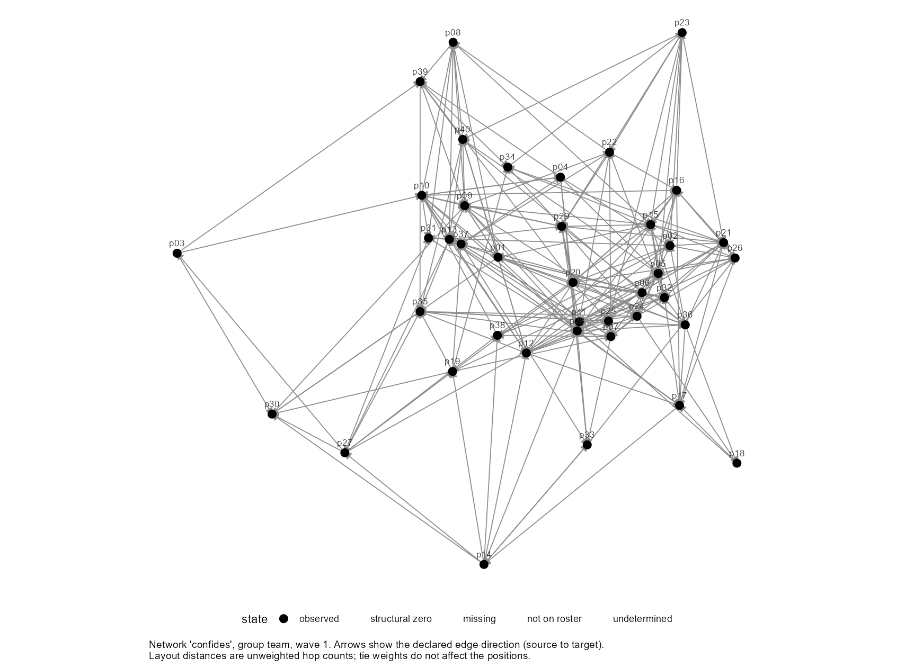
Look for three things: whether anyone is cut off (a person nobody confides in has no exposure), whether the team splits into clusters, and whether there is a dense core with people at the edges. All three shape what an exposure term can estimate. Here there is a core and a periphery, and nobody is cut off.
The coefficients
plot() on the fitted model draws each estimate with its 95% interval:
plot(fit)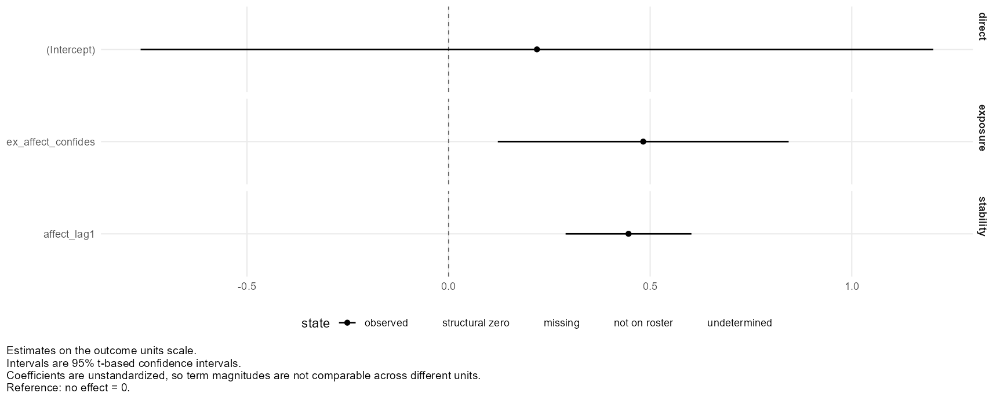
This is the coefficient table as a picture. An interval that stays clear of the dashed line is one whose p-value is below .05. The picture adds what the table hides: how wide each interval is compared with the others.
Later pages add one plot each: the latent space on page A7, and the differences between teams on page A8.
Other plots, and options
| Call | What it draws |
|---|---|
plot(team, variable = "advice", wave = 1) | A different tie |
plot(team, variable = "confides", wave = 2) | The network at the second survey |
plot(team, variable = "confides", wave = 1) | The default layout: everyone on a circle |
plot(fit, what = "effects") | The predicted change in affect across the range of exposure the team actually saw: one point per exposure term |
plot(fit2) | The coefficients of the model with covariates |
plot(fit_latent, what = "latent") | The latent space: page A7 |
plot(fit_teams, what = "heterogeneity") | Differences between teams: page A8 |
Every plot is a ggplot object, so you can add a title or a theme with +. plot_data() with the same arguments returns the table behind a plot.
The latent-space influence model
This page fits the same model with one added term, which guards against people having chosen confidants who were already like them.
Where we are
So far: affect ~ ar() + exposure(...) estimated a contagion effect of 0.48. The open question from page A2 is whether that is contagion or selection: people confiding in others who resemble them on something unmeasured that also shapes mood.
The idea
If people choose confidants by some hidden similarity, that similarity leaves a trace in the network itself: similar people end up close together in the web of ties. A latent-space model reads that trace. It places every person at a position in an imagined space, so that people who are near each other are likely to be tied. A person's position then stands in for the hidden traits they were chosen on, and adding the positions to the influence model adjusts for them.
Run it
One more term, latent(). It names the tie to read positions from and how many dimensions the space has. This needs the latentnet package and takes a minute or two.
fit_latent <- fit_influence(
affect ~ ar() +
exposure(affect, via = confides, x_lag = 1, w_lag = 1, normalize = "row") +
latent(confides, d = 2, seed = 1),
data = team
)
summary(fit_latent)Influence model
Formula: affect ~ ar() + exposure(affect, via = confides, x_lag = 1, w_lag = 1, normalize = "row") + latent(confides, d = 2, seed = 1)
Estimator: pooled ordinary least squares (the formula declares no random-effects term)
Backend: stats 4.6.2
Waves: analyzed 1 -> 2 of 2 present; 0 waves not used
Estimand: single transition
Latent-space adjustment lat_confides_1 (Xu 2018, 2021): network ~ euclidean(d = 2), at wave 1 (stage-one seed 1).
Positions are ESTIMATED, and their scale and location are arbitrary: a
position coefficient is not the effect of the unobserved trait. The
adjustment is plug-in -- the selection model's uncertainty does not enter
these standard errors.
Coefficients:
Term Estimate SE 95% interval df t value Pr(>|t|)
(Intercept) 0.9414 0.6180 [-0.3133, 2.1961] 35 1.523 0.137
affect_lag1 0.3912 0.0813 [0.2261, 0.5563] 35 4.809 <0.001 ***
ex_affect_confides 0.2994 0.1997 [-0.1060, 0.7048] 35 1.499 0.143
lat_confides_1_d1 -0.0600 0.0671 [-0.1963, 0.0763] 35 -0.894 0.378
lat_confides_1_d2 0.2706 0.1370 [-0.0077, 0.5488] 35 1.974 0.056 .
---
Signif. codes: 0 '***' 0.001 '**' 0.01 '*' 0.05 '.' 0.1 ' ' 1
Residual standard error: 0.3036 on 35 degrees of freedom
R-squared: 0.6885, adjusted: 0.6529
F-statistic: 19.34 on 4 and 35 DF, p-value: 1.782e-08
logLik: -6.40 on 6 parameters; AIC: 24.80; BIC: 34.94
Assumptions: this fit rests on 8 assumptions (2 not testable). netis_assumptions(fit)
lists them.
As data: netis_estimates(), netis_glance(), netis_variance_components().
Computed on request: netis_dependence(), netis_assumptions(), pseudo_r2(), influence_effect().
Design and estimation findings recorded at fit time: none.Reading it
Two things are new in the output.
- The header says a latent-space adjustment was made, on which network, and that the positions are estimated.
- Two new rows,
lat_confides_1_d1andlat_confides_1_d2, are the two dimensions of each person's position. Do not interpret these coefficients. The space has no fixed orientation, so the numbers would change if it were rotated. They are there to adjust the row above them.
What to read is how the contagion effect changed:
rbind(basic = coef(fit)[c("affect_lag1", "ex_affect_confides")],
latent = coef(fit_latent)[c("affect_lag1", "ex_affect_confides")])affect_lag1 ex_affect_confides basic 0.44628 0.48281 latent 0.39117 0.29940
The estimate fell from 0.48 to 0.30, and its interval now includes zero. Part of what the basic model called contagion is accounted for by where people sit in the network.
How to report this. Report both numbers. The basic model is the estimate under the assumption that confidants were not chosen on anything that drives mood. The adjusted model relaxes that assumption and costs precision. In these simulated data the truth is 0.5 and selection on affect was also built in, so both models are behaving as they should: with forty people, the adjustment cannot tell the two processes fully apart.
See the space
plot(fit_latent, what = "latent")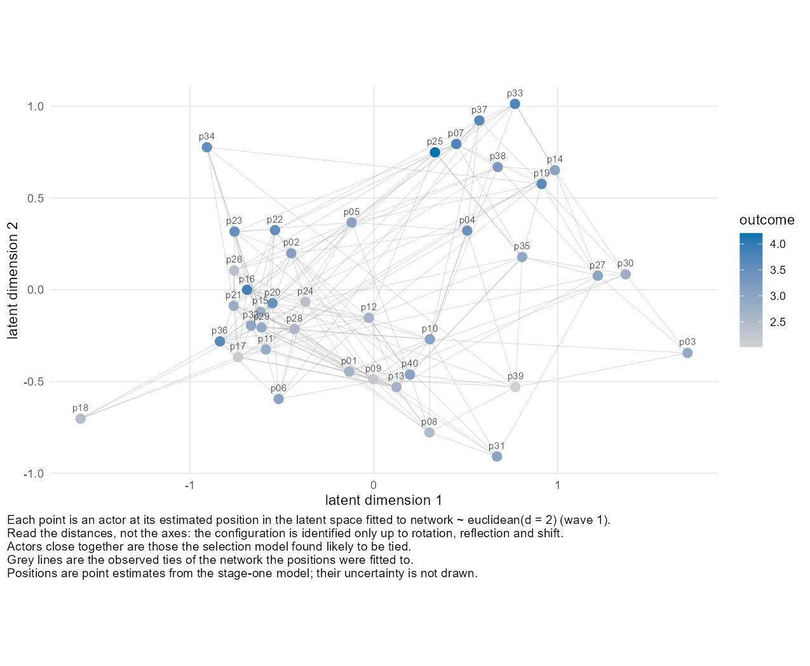
Read distances, not axes. Whether a point is on the left or the right means nothing; who it is near does. If the colours cluster, with similar moods sitting together, position and mood are related, which is exactly the situation the adjustment is for. The grey lines are the ties the positions were estimated from: most of them should be short, because the model places people who confide in each other close together.
What is homophily = for, and what should I put in it?
By default the positions are estimated from the network alone. They then stand in for every reason people confide in one another, including similarity on characteristics you measured and already have in the model.
homophily = names person characteristics that people may sort on. The network model then accounts for similarity on each of them directly, and the positions are left to describe what those characteristics do not explain. That remainder is what the adjustment is for: the traits you could not measure.
What to put in it
Generally, name the core person characteristics in your study that could plausibly shape who confides in whom. Those are the covariates in your influence model whose coefficients you care about, and anything else people are known to sort on. Xu, whose method this is, recommends conditioning the network model on observed homophily for the same reason.
Why it helps
Suppose people sort on extraversion and the network model is not told. The positions then absorb part of extraversion, and the influence model holds the same information twice: once in the extraversion column and once in the position columns. That overlap is collinearity, and it makes the coefficients you care about less clear. Naming the characteristic takes that information out of the positions before they enter the influence model.
The example below adds extraversion as a covariate and fits the model both ways. overlap() reports how much of extraversion the two position columns can reproduce, as an R-squared:
# How much of extraversion do the two position columns carry?
overlap <- function(fit) {
X <- model.matrix(fit$backend_fit)
positions <- X[, grep("^lat_", colnames(X))]
summary(lm(X[, "extraversion"] ~ positions))$r.squared
}
fit_plain <- fit_influence(
affect ~ ar() +
exposure(affect, via = confides, x_lag = 1, w_lag = 1, normalize = "row") +
extraversion + latent(confides, d = 2, seed = 1),
data = team
)
fit_homophily <- fit_influence(
affect ~ ar() +
exposure(affect, via = confides, x_lag = 1, w_lag = 1, normalize = "row") +
extraversion + latent(confides, d = 2, homophily = "extraversion", seed = 1),
data = team
)
round(c(without = overlap(fit_plain), with = overlap(fit_homophily)), 2)without with 0.15 0.04
Without homophily, the positions carry about 0.15 of the variation in extraversion. With it they carry about 0.04, so the extraversion coefficient and the position coefficients are no longer describing the same thing. This is the usual direction and not a guarantee, which is why the advice above says generally.
Two practical points
homophilycompares two people by the absolute difference in a number, so it suits numeric and 0/1 variables such asextraversion,tenureandremote.- Each variable you add can make the first step slower. For a term
homophilycannot express,terms =passes model terms tolatentnetdirectly: see?latent.
How many dimensions?
d is the number of dimensions. More dimensions can represent a more complicated pattern of who-is-near-whom, and each one costs a coefficient in a model with only forty rows. One or two is usual. With d = 1:
fit_latent1 <- fit_influence(
affect ~ ar() +
exposure(affect, via = confides, x_lag = 1, w_lag = 1, normalize = "row") +
latent(confides, d = 1, seed = 1),
data = team
)
coef(fit_latent1) (Intercept) affect_lag1 ex_affect_confides lat_confides_1
0.19054 0.44948 0.48907 0.01118 Here one dimension barely moves the contagion estimate, while two moves it a good deal. When the answer depends on d, say so and show both. There is no rule that picks the right one.
Other settings
| Argument | What it does |
|---|---|
d | Number of latent dimensions |
homophily = c("extraversion", "tenure") | Account for similarity on these variables in the network model, so the positions describe what is left: see the box above |
seed | Makes the positions reproducible: they come from a random sampler |
lag | Which wave's network to read positions from (default: the earlier one) |
What this adjustment is, and is not
The method is Xu's latent-space adjusted approach (2018, 2021). It is a two-step procedure: positions are estimated first, then used as if they were known. The uncertainty in the positions does not reach the standard errors of the influence model, and the output says so. It reduces bias from selection on hidden traits under its assumptions; it does not prove the remaining effect is causal.
The multilevel influence model
This page moves from one team to ten. The formula gains one term and the summary gains a section.
Where we are
Everything so far used one team of forty. Most studies have several teams, classrooms or sites. People in the same team share a manager, a workload and a mood, so their outcomes are not independent, and ties only exist within a team.
The data
demo_affect_teams ships with rnetis: ten teams of twenty people, the same variables as before, built the same way. The only difference in the tables is that the group column now has ten values.
demo_affect_teams<netis_data>
200 nodes in 10 groups, 3800 ties, directed, 2 waves, self-ties prohibited
node variables: static: extraversion, tenure, remote, project; dynamic: affect
tie variables: static: same_project, affect_gap, advice, talk; dynamic: confides
tie network semantics:
same_project: binary (inferred), complete_dyadic (inferred)
affect_gap: weighted, complete_dyadic (inferred)
confides: binary (inferred), value_rule
advice: binary (inferred), value_rule
talk: weighted, value_rule
no group_data suppliedWhat happens if you ignore the teams
rnetis will not fit the single-team model to ten teams:
fit_influence(
affect ~ ar() +
exposure(affect, via = confides, x_lag = 1, w_lag = 1, normalize = "row"),
data = demo_affect_teams
)Error: This netis_data object has 10 groups, but the formula has no random-effects term, so the fit would pool rows from unrelated networks into one intercept. Two ways forward: add (1 | group) to the formula, which fits one mixed-effects model across the networks and is usually what is wanted; or subset to a single group's rows and reconstruct a single-group netis_data(), which fits that network on its own by ordinary least squares.
The message says what to do. A model with no team term would treat two hundred people as one team with one average mood.
Run it
Add (1 | group): each team gets its own baseline. This is a random intercept, the same notation lmer() uses.
fit_teams <- fit_influence(
affect ~ ar() +
exposure(affect, via = confides, x_lag = 1, w_lag = 1, normalize = "row") +
(1 | group),
data = demo_affect_teams
)
summary(fit_teams)Influence model
Formula: affect ~ ar() + exposure(affect, via = confides, x_lag = 1, w_lag = 1, normalize = "row") + (1 | group)
Estimator: mixed-effects (lme4) (the formula declares a random-effects term)
Backend: lme4 2.1.0
Waves: analyzed 1 -> 2 of 2 present; 0 waves not used
Estimand: single transition
Coefficients:
Term Estimate SE 95% interval df t value Pr(>|t|)
(Intercept) 0.0700 0.1938 [-0.3138, 0.4538] 115.3 0.361 0.718
affect_lag1 0.4138 0.0313 [0.3521, 0.4754] 190.9 13.239 <0.001 ***
ex_affect_confides 0.5721 0.0594 [0.4549, 0.6893] 184.6 9.629 <0.001 ***
---
Signif. codes: 0 '***' 0.001 '**' 0.01 '*' 0.05 '.' 0.1 ' ' 1
t tests and intervals use Satterthwaite's degrees of freedom, as lmerTest reports them.
Random effects:
Groups Name Variance Std.Dev. Corr
group (Intercept) 0.02928 0.1711
Residual 0.09184 0.303
Residual SD: 0.303; 200 rows; groups: group, 10
R-squared (Nakagawa-Schielzeth): marginal 0.6823, conditional 0.7591
logLik: -59.91 (REML) on 5 parameters; AIC: 129.82; BIC: 146.31
Assumptions: this fit rests on 8 assumptions (2 not testable). netis_assumptions(fit)
lists them.
As data: netis_estimates(), netis_glance(), netis_variance_components().
Computed on request: netis_dependence(), netis_assumptions(), pseudo_r2(), influence_effect().
Design and estimation findings recorded at fit time: none.Reading it
The coefficients read exactly as before. The contagion effect is 0.57, and with two hundred people its interval is much narrower than it was with forty. Three things are new:
dfnow has decimals. In a multilevel model the degrees of freedom are estimated (Satterthwaite's method, the onelmerTestuses), and they differ by coefficient. The note under the table says so.- Random effects.
group (Intercept)is how much teams differ in their baseline affect, as a variance and a standard deviation.Residualis what is left within teams. Compare the two standard deviations: teams differ by about 0.17 of a point, people within a team by about 0.30. - Two R-squared values. Marginal is the share explained by the terms in the formula alone. Conditional adds the team baselines. The gap between them is how much knowing someone's team helps.
See the difference between teams
plot(fit_teams, what = "heterogeneity")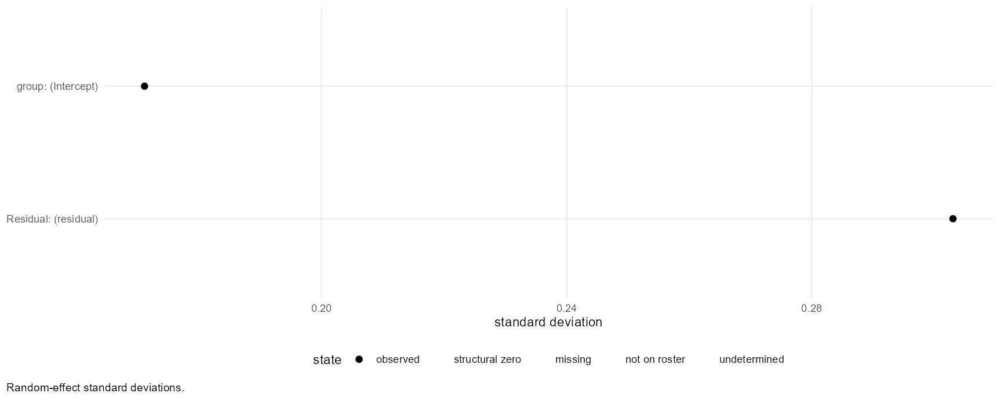
Can the contagion effect differ between teams?
Yes. A random slope lets each team have its own exposure effect. Name the exposure column inside the brackets:
fit_slope <- fit_influence(
affect ~ ar() +
exposure(affect, via = confides, x_lag = 1, w_lag = 1, normalize = "row") +
(1 + ex_affect_confides | group),
data = demo_affect_teams
)
fit_slopeboundary (singular) fit: see help('isSingular')
Warning message:
Model failed to converge with 1 negative eigenvalue: -5.7e-03
<netis_influence>
affect ~ ar() + exposure(affect, via = confides, x_lag = 1, w_lag = 1, normalize = "row") + (1 + ex_affect_confides | group)
Estimator: mixed-effects (lme4) (the formula declares a random-effects term) [backend: lme4]
Waves: analyzed 1 -> 2 of 2 present; 0 waves not used
200 rows in the estimating sample
Coefficients:
Term Estimate SE 95% interval df t value Pr(>|t|)
(Intercept) 0.0579 0.1848 [-0.3072, 0.4230] 153.0 0.313 0.754
affect_lag1 0.4158 0.0313 [0.3541, 0.4775] 190.6 13.287 <0.001 ***
ex_affect_confides 0.5698 0.0618 [0.4457, 0.6940] 50.3 9.216 <0.001 ***
---
Signif. codes: 0 '***' 0.001 '**' 0.01 '*' 0.05 '.' 0.1 ' ' 1
t tests and intervals use Satterthwaite's degrees of freedom, as lmerTest reports them.
Residual SD: 0.3035; 200 rows; groups: group, 10
R-squared: not computed for this random-effects structure (see ?pseudo_r2)
Assumptions: this fit rests on 8 assumptions (2 not testable). netis_assumptions(fit)
lists them.
Fit-time findings: 2; netis_diagnostics(fit) lists them. More: summary(fit).With ten teams there is little information about how much a slope varies, so treat this as exploratory. A random slope also changes the degrees of freedom for that coefficient, as the df column shows.
Other settings
| Formula | What it fits |
|---|---|
+ (1 | group) | Each team has its own baseline |
+ (1 + ex_affect_confides | group) | Each team has its own baseline and its own contagion effect |
+ tenure + (1 | group) | A covariate, as before |
+ latent(confides, d = 1) + (1 | group) | The latent-space adjustment, with one space per team |
The plots and the functions from pages A5 and A6 work on a multilevel fit unchanged. The latent-space plot needs a team: plot(fit, what = "latent", group = "team01").
How many teams is enough?
The team-level variance is estimated from the number of teams, not the number of people. Ten is few. The fixed effects (the coefficient table) are well estimated here; the random-effects numbers are rough. If the summary says the fit is singular, the model could not tell the team variance from zero.
Where to go from here
That is the Influence sequence: a model you can fit, read, plot, adjust for selection, and extend to several groups. The Selection sequence asks the other question of the same data: who comes to confide in whom. For the choices these pages made for you, and what the alternatives change, read the advanced walkthrough.
Selection: run a model first
This page fits a selection model with one call and reads the result. The pages after it go back over how each part worked.
The model
This is the team from the Influence pages: forty people, surveyed twice, who each reported their affect and who they confide in. The Influence pages asked whether affect spreads along confiding ties. The question here runs the other way: who comes to confide in whom? In particular, do people come to confide in others whose affect is close to their own? This call fits a model of it, and takes about two minutes because it runs a Markov chain:
library(rnetis)
fit <- fit_selection(
confides ~ dyad(affect_gap, lag = 1) + dyad(same_project, lag = 1) +
prior_tie(lag = 1),
data = demo_affect, seed = 1
)
summary(fit) Formula: confides ~ dyad(affect_gap, lag = 1) + dyad(same_project, lag = 1) + prior_tie(lag = 1)
Family: binary tie (probit)
Groups: 1
Backend: amen::ame(), one observed network per group
Waves: analyzed 1 -> 2 of 2 present; 0 waves not used
Coefficients are on the latent probit scale, not a probability or odds scale: exp(coefficient) is not an odds ratio for this model. Because they shift with the modeled sender, receiver, and dyadic heterogeneity, comparing them across specifications is not like comparing linear regression coefficients. Report probability-scale contrasts for magnitude.
Coefficients:
Term Estimate Post.SD 95% interval Est/SD Tail prob.
intercept -1.2986 0.1074 [-1.5131, -1.0862] -12.091 <0.005 **
dyd_affect_gap_lag1 -0.4656 0.0964 [-0.6589, -0.2838] -4.828 <0.005 **
dyd_same_project_lag1 0.4663 0.0922 [0.2988, 0.6430] 5.056 <0.005 **
prior_tie 1.4087 0.1072 [1.2033, 1.6136] 13.136 <0.005 **
---
Signif. codes: 0 '***' 0.001 '**' 0.01 '*' 0.05 '.' 0.1 ' ' 1
Posterior summaries, not tests. Estimate is the posterior mean; Est/SD is its ratio to
the posterior SD; Tail prob. is twice the posterior probability that the coefficient
has the opposite sign, and the marks are on that. It is counted from the retained
draws, so its resolution is 2 / (number of draws).
Model fit:
1560 observed dyads among 40 actors
Pseudo R-squared: latent-scale variance share 0.285 [0.227, 0.339]; Tjur's D 0.253.
What each measures: pseudo_r2(fit).
Posterior predictive check (400 simulated networks): the observed network is inside
the simulated 95% range on 5 of 5 statistics.
Table: netis_gof(fit). Histograms: plot(fit, what = "gof").
Statistic Measures Observed Simulated 95% range ppp Counted
sd.rowmean out-degree spread 0.059 [0.052, 0.083] 0.82 yes
sd.colmean in-degree spread 0.056 [0.051, 0.082] 0.90 yes
dyad.dep dyadic dependence 0.014 [-0.047, 0.145] 0.72 yes
cycle.dep cyclic triads 0.003 [-0.006, 0.026] 0.82 yes
trans.dep transitive triads 0.004 [-0.001, 0.022] 0.85 yes
ppp is one-sided: near 0 and near 1 are both misfit, 0.5 is agreement.
Fit-time findings: 0 WARNING, 2 NOTE. List them with netis_diagnostics(fit).What it says
Look at the Coefficients table. Each row is one thing that could make a confiding tie more or less likely at the second survey:
dyd_affect_gap_lag1(-0.47). This is the selection effect.affect_gapis how far apart two people's affect was at the first survey. The coefficient is negative, so the further apart two people were, the less likely one came to confide in the other. People chose confidants whose mood was like theirs.dyd_same_project_lag1(0.47). Two people on the same project were more likely to confide in each other.prior_tie(1.41). A tie that existed at the first survey was much more likely to exist at the second. Confiding relationships persist.- The 95% interval for the selection effect runs from -0.66 to -0.28 and does not include zero.
Put in one sentence, the result is that people in this team came to confide in others whose affect was close to their own, over and above sharing a project and already confiding in them.
The data are simulated, so the right answer is known. All three effects were built in, with these signs. Page B5 compares the sizes.
Two things in this output differ from an Influence model, and later pages explain both. The coefficients are on a probit scale, so they are not changes in probability. And the model is Bayesian, so the table reports posterior summaries where a regression would report tests.
How that worked, and where this goes next
That one call did a lot. It took the confiding ties at the second survey as the outcome, one row for every ordered pair of people. It lined each pair up with its affect gap, its shared project and whether the tie already existed at the first survey. Then it fitted a model that also gives every person their own tendency to confide and to be confided in. The next pages take that apart:
| Page | What it covers |
|---|---|
| B2 · Theory | What a selection claim says, and how to write the hypothesis |
| B3 · Data | The same dataset, read with the tie as the outcome |
| B4 · Running the model | The formula, one term at a time, and the chain settings |
| B5 · Interpreting | Everything summary() printed, and how to judge the fit |
| B6 · Visualizing | The network, the coefficients and the fit check, as pictures |
| B7 · Latent factors | Letting the model find structure the covariates do not explain |
| B8 · Multilevel | The same model across ten teams |
If you only have a few minutes, read B4 and B5. You will be able to fit this model to your own data and report it.
Selection: the theory and the hypothesis
This page explains what a claim of selection says, and the five things a hypothesis has to pin down before a model can test it.
What selection means
Selection is a claim about change in a relationship: a tie forms, or lasts, because of who the two people are. Choosing confidants whose mood matches yours is one example. The outcome is the tie itself, so the thing being explained belongs to a pair of people and not to one person.
When the claim is that people choose others who are like them, it is called homophily. On the Influence pages homophily was the rival explanation that had to be guarded against. Here it is the thing being measured.
Three kinds of explanation
A tie from one person to another can be explained by something about either person or something about the pair. A selection model keeps the three apart.
| Explanation | Example | In the formula |
|---|---|---|
| Something about the sender | Extraverted people confide in more people | sender(extraversion) |
| Something about the receiver | Extraverted people are confided in more | receiver(extraversion) |
| Something about the pair | People with similar affect confide in each other | dyad(affect_gap) |
Keeping them apart matters. If a few people confide in everyone, pairs that include them have many ties whatever the pair has in common. The model therefore gives every person their own tendency to send ties and their own tendency to receive them, and a pair characteristic has to explain what is left.
Why it takes two surveys
At a single point in time, two people who confide in each other and have similar moods could have chosen each other for that reason, or could have grown alike afterwards. With two surveys you can ask about the order: were they alike at the first survey, before the tie at the second? The model also includes whether the tie already existed at the first survey, so it explains the ties that formed or ended and not the ones that were always there.
Writing the hypothesis
A testable selection hypothesis names five things. Each one becomes a piece of the model formula on page B4.
| The hypothesis has to say | In this example | In the formula |
|---|---|---|
| Which tie is explained | Who confides in whom at the second survey | confides ~ |
| Compared with what | Whether that tie existed at the first survey | prior_tie(lag = 1) |
| What about the pair matters | How far apart their affect was | dyad(affect_gap, ...) |
| Measured when | At the first survey, before the tie being explained | lag = 1 |
| Net of what else | Sharing a project | dyad(same_project, lag = 1) |
H1. The further apart two people's affect at time 1, the less likely one confides in the other at time 2, controlling for whether that tie existed at time 1 and whether the two share a project.
Written that way it can fail. If the coefficient on the affect gap is zero or positive, H1 is not supported.
The equation
y is whether i confides in j, and the subscripts 1 and 2 are the two surveys. x is a characteristic of the pair, such as their affect gap. a is person i's own tendency to confide in others and b is person j's tendency to be confided in. Φ (phi) is the normal curve's cumulative probability, which turns the sum into a probability between 0 and 1. That is what makes this a probit model.
What this model does not establish
A negative β is what choosing similar confidants predicts. It is also what you would see if something unmeasured made two people both similar in mood and likely to confide, such as sitting in the same office. The model compares pairs; it cannot rule out every reason two people might be alike.
Why the model uses one pair of surveys
rnetis fits one transition: an earlier survey and a later one. With three or more surveys it asks you to name which pair to use. Pooling several transitions with a term for the earlier tie has known statistical problems that this package does not correct for, so it does not do it silently.
The data, read for Selection
Selection uses the same data object as Influence. This page reads it again with the tie as the outcome, and does not build anything new.
The same object
demo_affect ships with rnetis, and page A3 builds it from two ordinary tables. If you have not read that page, it is the place to see what shape your own data has to be in. Nothing about the object changes for a selection model.
team <- demo_affect
team<netis_data>
40 nodes in 1 group, 1560 ties, directed, 2 waves, self-ties prohibited
node variables: static: extraversion, tenure, remote, project; dynamic: affect
tie variables: static: same_project, affect_gap, advice, talk; dynamic: confides
tie network semantics:
same_project: binary (inferred), complete_dyadic (inferred)
affect_gap: weighted, complete_dyadic (inferred)
confides: binary (inferred), value_rule
advice: binary (inferred), value_rule
talk: weighted, value_rule
no group_data suppliedThe outcome is the tie table
In an Influence model the outcome was a column of the node table. Here it is a column of the tie table, which has one row for every ordered pair of people at each survey:
ties <- netis_ties(team)
head(ties[ties$wave == 2, ])group source target same_project affect_gap advice talk wave confides 2 team p02 p01 0 0.16 0 0 2 0 4 team p03 p01 1 0.49 0 3 2 0 6 team p04 p01 1 1.27 0 1 2 0 7 team p05 p01 0 0.58 0 0 2 0 10 team p06 p01 0 1.20 0 1 2 0 12 team p07 p01 0 1.84 0 4 2 0
Forty people make 40 × 39 = 1,560 ordered pairs. Ordered means that p02 → p01 and p01 → p02 are two rows: one person can confide in another without it being returned. The model is fitted to all 1,560 rows of the second survey, the ties and the non-ties alike, because it explains which of the possible ties exist.
How much the network changed
A selection model learns from ties that formed and ties that ended, so it is worth counting them before fitting:
# How many of the 1,560 possible ties exist at each survey?
tapply(ties$confides, ties$wave, sum)
# What happened to the ties and the non-ties of the first survey?
table(first = ties$confides[ties$wave == 1], second = ties$confides[ties$wave == 2]) 1 2
210 214
second
first 0 1
0 1246 104
1 100 110There were 210 confiding ties at the first survey and 214 at the second. The table shows what became of each pair: some ties lasted, some ended, and some new ones formed. If almost nothing had changed, there would be little for the model to explain.
Three kinds of predictor
Every predictor in a selection model has a role, and the role decides which table it comes from.
| Role | Comes from | In these data |
|---|---|---|
| Sender: the person the tie comes from | the node table | extraversion, tenure, remote |
| Receiver: the person the tie goes to | the node table | extraversion, tenure, remote |
| Pair: the two people together | the tie table | affect_gap, same_project, advice, talk |
One node variable can be used in both roles at once: whether extraverted people confide in more people, and whether they are confided in more, are separate questions with separate coefficients.
Every function used on this page
| Function | What it did here |
|---|---|
netis_ties(team) | Gives the tie table back out of the object |
head(d) | The first six rows |
tapply(x, g, sum) | The sum of x within each group g |
table(a, b) | Counts every combination of a and b |
Making a pair variable from a node variable
affect_gap is the absolute difference between two people's affect. It was computed when the tie table was built on page A3, with one line: abs(people$affect[s] - people$affect[t]). Any similarity or difference between two people is made the same way and stored as a column of the tie table. A selection model needs it there because the model works on pairs.
Using your own data instead
You need what an Influence model needs: a node table and a tie table, joined by netis_data(). For selection the tie table should list every pair, with a 0 where there is no tie, and you should declare that a 0 is an observed non-tie. Page A3's box on tie_meta shows how. A pair nobody was asked about is not a 0, and treating it as one tells the model that someone was asked and said no.
Running the selection model
fit_selection() takes a formula, a data object and the settings of a Markov chain. This page runs it and then reads the call one piece at a time.
The model
fit <- fit_selection(
confides ~ dyad(affect_gap, lag = 1) + dyad(same_project, lag = 1) +
prior_tie(lag = 1),
data = team,
nscan = 10000, burn = 500, odens = 25, seed = 1
)
fit<netis_selection>
confides ~ dyad(affect_gap, lag = 1) + dyad(same_project, lag = 1) + prior_tie(lag = 1)
Outcome family: binary tie (probit)
Groups: 1 (team)
Backend: amen::ame(), one observed network per group
Waves: analyzed 1 -> 2 of 2 present; 0 waves not used
Coefficients:
Term Estimate Post.SD 95% interval Est/SD Tail prob.
intercept -1.2986 0.1074 [-1.5131, -1.0862] -12.091 <0.005 **
dyd_affect_gap_lag1 -0.4656 0.0964 [-0.6589, -0.2838] -4.828 <0.005 **
dyd_same_project_lag1 0.4663 0.0922 [0.2988, 0.6430] 5.056 <0.005 **
prior_tie 1.4087 0.1072 [1.2033, 1.6136] 13.136 <0.005 **
---
Signif. codes: 0 '***' 0.001 '**' 0.01 '*' 0.05 '.' 0.1 ' ' 1
Posterior summaries, not tests. Estimate is the posterior mean; Est/SD is its ratio to
the posterior SD; Tail prob. is twice the posterior probability that the coefficient
has the opposite sign, and the marks are on that. It is counted from the retained
draws, so its resolution is 2 / (number of draws).
1560 observed dyads among 40 actors
Pseudo R-squared: latent-scale variance share 0.285 [0.227, 0.339]; Tjur's D 0.253.
What each measures: pseudo_r2(fit).
Posterior predictive check (400 simulated networks): the observed network is inside the
simulated 95% range on 5 of 5 statistics.
Table: netis_gof(fit). Histograms: plot(fit, what = "gof").
Fit-time findings: 0 WARNING, 2 NOTE; netis_diagnostics(fit) lists them. More: summary(fit).This is the model from page B1 on the team object, with the chain settings written out. The next page reads the output; this one is about what you typed.
The formula as a whole
confides ~ dyad(affect_gap, lag = 1) + dyad(same_project, lag = 1) +
prior_tie(lag = 1)Read ~ as is explained by. The outcome is on the left, and each term on the right adds one explanation:
| Piece | In words |
|---|---|
confides ~ | Whether one person confides in another at the later survey is explained by... |
dyad(affect_gap, lag = 1) | ...how far apart their affect was earlier... |
dyad(same_project, lag = 1) | ...whether they share a project... |
prior_tie(lag = 1) | ...and whether that tie already existed earlier. |
The outcome
confides is a column of the tie table. rnetis takes the outcome from the later wave. Because confides is 0 or 1, the model is a probit model of whether the tie exists, which is the default (family = "bin").
dyad(): something about the pair
dyad() names a column of the tie table: a characteristic of the two people together. dyad(affect_gap, lag = 1) is the term H1 is about. In the output it appears as dyd_affect_gap_lag1.
sender() and receiver(): something about one person
These name a column of the node table and say which end of the tie it describes. Do extraverted people confide in more people, and are they confided in more? Adding both asks both questions:
fit2 <- fit_selection(
confides ~ sender(extraversion, lag = 1) + receiver(extraversion, lag = 1) +
dyad(affect_gap, lag = 1) + dyad(same_project, lag = 1) +
prior_tie(lag = 1),
data = team,
nscan = 10000, burn = 500, odens = 25, seed = 1
)
fit2<netis_selection>
confides ~ sender(extraversion, lag = 1) + receiver(extraversion, lag = 1) + dyad(affect_gap, lag = 1) + dyad(same_project, lag = 1) + prior_tie(lag = 1)
Outcome family: binary tie (probit)
Groups: 1 (team)
Backend: amen::ame(), one observed network per group
Waves: analyzed 1 -> 2 of 2 present; 0 waves not used
Coefficients:
Term Estimate Post.SD 95% interval Est/SD Tail prob.
intercept -1.3019 0.1063 [-1.5034, -1.1011] -12.250 <0.005 **
snd_extraversion_lag1 0.0481 0.0538 [-0.0522, 0.1490] 0.894 0.415
rcv_extraversion_lag1 -0.0722 0.0595 [-0.1912, 0.0437] -1.215 0.175
dyd_affect_gap_lag1 -0.4751 0.0974 [-0.6783, -0.2904] -4.878 <0.005 **
dyd_same_project_lag1 0.4644 0.0913 [0.2762, 0.6409] 5.085 <0.005 **
prior_tie 1.4243 0.1115 [1.2047, 1.6399] 12.779 <0.005 **
---
Signif. codes: 0 '***' 0.001 '**' 0.01 '*' 0.05 '.' 0.1 ' ' 1
Posterior summaries, not tests. Estimate is the posterior mean; Est/SD is its ratio to
the posterior SD; Tail prob. is twice the posterior probability that the coefficient
has the opposite sign, and the marks are on that. It is counted from the retained
draws, so its resolution is 2 / (number of draws).
1560 observed dyads among 40 actors
Pseudo R-squared: latent-scale variance share 0.295 [0.240, 0.348]; Tjur's D 0.255.
What each measures: pseudo_r2(fit).
Posterior predictive check (400 simulated networks): the observed network is inside the
simulated 95% range on 5 of 5 statistics.
Table: netis_gof(fit). Histograms: plot(fit, what = "gof").
Fit-time findings: 0 WARNING, 4 NOTE; netis_diagnostics(fit) lists them. More: summary(fit).Neither is clearly different from zero here, and the selection effect is unchanged. Every predictor needs one of the three roles. A bare variable name is refused, because rnetis cannot tell which end of the tie it describes:
fit_selection(confides ~ extraversion + prior_tie(lag = 1), data = team)Error: Selection formulas give every predictor an explicit role, so a bare term is not interpretable: extraversion. Wrap each one in sender(), receiver(), or dyad() -- for example sender(extraversion) for a property of the tie's sender, or sender(extraversion) + receiver(extraversion) to allow both.
prior_tie(): where the pair started
prior_tie() adds whether the same tie existed at the earlier survey. It does for a selection model what ar() does for an influence model: it turns the question from who confides in whom into which ties formed or ended. It is also what tells rnetis that the earlier survey is the starting point and the later one is the outcome.
Timing: lag
lag = 1 says that a predictor is taken from one wave before the outcome. Ties at survey 2 are therefore explained by the affect gap, the projects and the ties of survey 1, so each cause is measured before the effect. The line Waves: analyzed 1 -> 2 in the output confirms which pair of surveys was used.
prior_tie() uses lag = 1 by default. dyad(), sender() and receiver() use lag = 0 by default, which takes the value measured alongside the outcome. That is rarely what a hypothesis about selection means, so these pages write lag = 1 on every term. In these data the covariates were recorded once and do not change between surveys, so the lag selects the same values either way, and rnetis says so in a note.
The chain settings
A selection model is fitted by a Markov chain: the computer draws thousands of plausible sets of coefficients, and the results are summaries of those draws. Four settings control it.
| Setting | Here | What it does |
|---|---|---|
nscan | 10000 | How many draws the chain makes after warming up |
burn | 500 | How many early draws are thrown away as warm-up |
odens | 25 | Keep every 25th draw, which leaves 400 |
seed | 1 | Fixes the random numbers, so the fit can be repeated exactly |
These are the defaults, written out so they can be seen. A longer chain gives steadier numbers and takes proportionally longer. Page B5 shows how to check whether a chain was long enough.
Other settings, and what they change
Reciprocity
prior_reciprocity() asks whether a tie is likelier where the other person confided first: whether j confiding in i at the first survey makes i confide in j at the second.
fit_recip <- fit_selection(
confides ~ dyad(affect_gap, lag = 1) + dyad(same_project, lag = 1) +
prior_tie(lag = 1) + prior_reciprocity(lag = 1),
data = team,
nscan = 10000, burn = 500, odens = 25, seed = 1
)
round(coef(fit_recip), 2) intercept dyd_affect_gap_lag1 dyd_same_project_lag1 prior_tie
-1.25 -0.50 0.50 1.40
prior_recip
-0.29 No reciprocity was built into these data, and the estimate is small beside the persistence of a tie. Look at its interval with summary(fit_recip) before reading anything into it.
A valued tie
If the outcome is an amount, such as hours spent talking, family = "nrm" models the amount itself. The coefficients are then on the outcome's own scale, with no probit.
An undirected tie
If a tie has no direction, such as working on the same task, declare it undirected in netis_data() and fit with symmetric = TRUE. Each person then has one tendency to have ties, with no separate sending and receiving.
Terms you can add to the formula
| Term | What it adds |
|---|---|
sender(x, lag = 1) | A characteristic of the person the tie comes from |
receiver(x, lag = 1) | A characteristic of the person the tie goes to |
dyad(z, lag = 1) | A characteristic of the pair, from the tie table |
prior_tie(lag = 1) | Whether the tie existed at the earlier wave |
prior_reciprocity(lag = 1) | Whether the reverse tie existed at the earlier wave |
Another tie can be a predictor: dyad(advice, lag = 1) asks whether asking someone for advice goes with coming to confide in them. Interactions between terms are not available in a selection model. The full list is on formula terms at a glance.
What rnetis did behind the one call
- Worked out which two waves to use, and checked there was exactly one transition to analyze.
- Built a 40 × 40 table of the outcome and one of each predictor, with every pair in the same place in each.
- Gave every person a sender effect and a receiver effect, so that people who confide widely or are confided in widely do not distort the pair terms.
- Ran the Markov chain through the
amenpackage and kept every 25th draw. - Simulated a network from the model at each kept draw, for the fit check on the next page.
- Recorded anything it noticed about the specification.
Interpreting the selection model
The output of summary() has four parts: what was fitted, the coefficients, how well the model fits, and what was noticed while fitting. This page goes through them in order.
The output
summary(fit) Formula: confides ~ dyad(affect_gap, lag = 1) + dyad(same_project, lag = 1) + prior_tie(lag = 1)
Family: binary tie (probit)
Groups: 1
Backend: amen::ame(), one observed network per group
Waves: analyzed 1 -> 2 of 2 present; 0 waves not used
Coefficients are on the latent probit scale, not a probability or odds scale: exp(coefficient) is not an odds ratio for this model. Because they shift with the modeled sender, receiver, and dyadic heterogeneity, comparing them across specifications is not like comparing linear regression coefficients. Report probability-scale contrasts for magnitude.
Coefficients:
Term Estimate Post.SD 95% interval Est/SD Tail prob.
intercept -1.2986 0.1074 [-1.5131, -1.0862] -12.091 <0.005 **
dyd_affect_gap_lag1 -0.4656 0.0964 [-0.6589, -0.2838] -4.828 <0.005 **
dyd_same_project_lag1 0.4663 0.0922 [0.2988, 0.6430] 5.056 <0.005 **
prior_tie 1.4087 0.1072 [1.2033, 1.6136] 13.136 <0.005 **
---
Signif. codes: 0 '***' 0.001 '**' 0.01 '*' 0.05 '.' 0.1 ' ' 1
Posterior summaries, not tests. Estimate is the posterior mean; Est/SD is its ratio to
the posterior SD; Tail prob. is twice the posterior probability that the coefficient
has the opposite sign, and the marks are on that. It is counted from the retained
draws, so its resolution is 2 / (number of draws).
Model fit:
1560 observed dyads among 40 actors
Pseudo R-squared: latent-scale variance share 0.285 [0.227, 0.339]; Tjur's D 0.253.
What each measures: pseudo_r2(fit).
Posterior predictive check (400 simulated networks): the observed network is inside
the simulated 95% range on 5 of 5 statistics.
Table: netis_gof(fit). Histograms: plot(fit, what = "gof").
Statistic Measures Observed Simulated 95% range ppp Counted
sd.rowmean out-degree spread 0.059 [0.052, 0.083] 0.82 yes
sd.colmean in-degree spread 0.056 [0.051, 0.082] 0.90 yes
dyad.dep dyadic dependence 0.014 [-0.047, 0.145] 0.72 yes
cycle.dep cyclic triads 0.003 [-0.006, 0.026] 0.82 yes
trans.dep transitive triads 0.004 [-0.001, 0.022] 0.85 yes
ppp is one-sided: near 0 and near 1 are both misfit, 0.5 is agreement.
Fit-time findings: 0 WARNING, 2 NOTE. List them with netis_diagnostics(fit).1. The header: what was fitted
- Formula is what you typed.
- Family says the outcome is a yes/no tie, modelled with a probit.
- Backend names the software that ran the chain,
amen. - Waves says which surveys were used:
1 -> 2. - The paragraph about scale is a warning worth reading once. The next section explains it.
2. The coefficients
The table has the shape of a regression table, but the columns are summaries of the chain's draws and not tests.
| Column | What it tells you |
|---|---|
Estimate | The average of the draws (the posterior mean) |
Post.SD | How much the draws vary: the counterpart of a standard error |
95% interval | The range that holds the middle 95% of the draws |
Est/SD | The estimate divided by Post.SD: the counterpart of a t value |
Tail prob. | Twice the share of draws on the other side of zero: the counterpart of a p-value |
| stars | Marks on Tail prob.: |
Tail prob. is counted from the 400 kept draws, so it cannot be smaller than 2/400. That is why a clear effect shows <0.005 and two stars, and why three stars need a longer chain.
Row by row:
interceptsets how common ties are overall. It is negative because most pairs do not have a tie.dyd_affect_gap_lag1= -0.47. This is the selection effect: pairs whose affect was further apart were less likely to have a tie. Its interval is [-0.66, -0.28].dyd_same_project_lag1= 0.47. Pairs on the same project were more likely to have a tie.prior_tie= 1.41. This is persistence, and it is the largest effect in the table.
How big is the effect?
The coefficients are on the probit scale. A coefficient is a shift along the curve that turns the model's sum into a probability, so the same coefficient changes the probability a lot in the middle of the curve and very little near 0 or 1. Do not read a coefficient as a change in probability, and do not exponentiate it into an odds ratio. selection_effect() does the conversion:
selection_effect(fit, "dyd_same_project_lag1")Average marginal probability contrast Term: dyd_same_project_lag1 (0 to 1 at every dyad) Estimand: conditional on the observed network Group: team Dyads: 1560 +8.3 percentage points [5.0, 12.2] (95%) Actor effects are held at their posterior means rather than integrated over, because the fit keeps them only as posterior means. This interval reflects uncertainty in the coefficients only and is narrower than a fully propagated one.
Sharing a project raises the probability of a confiding tie by about 8.3 percentage points, averaged over the pairs in this team. For the selection effect, ask what one more point of affect gap does:
selection_effect(fit, "dyd_affect_gap_lag1", delta = 1)Average marginal probability contrast Term: dyd_affect_gap_lag1 (observed value + 1) Estimand: conditional on the observed network Group: team Dyads: 1560 -6.0 percentage points [-8.1, -3.9] (95%) Actor effects are held at their posterior means rather than integrated over, because the fit keeps them only as posterior means. This interval reflects uncertainty in the coefficients only and is narrower than a fully propagated one.
A pair one point further apart in affect is about 6.0 percentage points less likely to have a tie. That is the number to quote when someone asks how much similarity matters.
3. How well the model fits
A selection model has no R-squared, AIC or BIC. summary() reports two other things.
- Pseudo R-squared. Two measures of how much the predictors account for. Tjur's D is the easier one to read: the average predicted probability for pairs that have a tie, minus the average for pairs that do not.
- The posterior predictive check. The fitted model can generate networks. rnetis generated one at each kept draw, measured five features of each, and compared them with the same five features of the network you observed. The line says on how many of the five the observed network falls inside the range the model produces.
The small table under that line lists the five features. Out-degree and in-degree spread are about how unequally people send and receive ties. Dyadic dependence is about ties being returned. The two triad features are about ties clustering in threes. Here the observed network is inside the range on all five, which means the model can produce networks that look like this one. It does not mean the model is correct.
4. What was noticed while fitting
The last line counts findings: things rnetis noticed about the specification. A NOTE is for information and a WARNING deserves a look. netis_diagnostics(fit) lists them:
netis_diagnostics(fit)[, c("level", "summary")] level
1 NOTE
2 NOTE
summary
1 dyad(affect_gap, lag = 1) lags a variable that does not vary across waves in this data, so the lagged value is the same as the unlagged one and the lag has no effect.
2 dyad(same_project, lag = 1) lags a variable that does not vary across waves in this data, so the lagged value is the same as the unlagged one and the lag has no effect.These two notes are about the lags. The covariates do not change between surveys in these data, so lag = 1 selects the same values as leaving it out. The notes are expected here.
The fit check in full: netis_gof(fit)
gof <- netis_gof(fit)
gof[, c("statistic", "observed", "predicted_lower", "predicted_upper", "ppp")]statistic observed predicted_lower predicted_upper ppp 1 sd.rowmean 0.0593718 0.05217883 0.083035 0.8250 2 sd.colmean 0.0564610 0.05145956 0.081823 0.8975 3 dyad.dep 0.0143173 -0.04682114 0.145202 0.7175 4 cycle.dep 0.0028596 -0.00613284 0.026422 0.8175 5 trans.dep 0.0042699 -0.00085238 0.021912 0.8500
observed is the value in your network. predicted_lower and predicted_upper hold the middle 95% of the simulated networks. ppp is the share of simulated networks with a value at least as large as the observed one. It is one-sided, so values near 0 and near 1 both mean the model misses that feature, and values near 0.5 mean it reproduces it.
A feature outside its range tells you what the model cannot reproduce. The two triad features are the ones a model with only sender, receiver and pair terms has no way to produce, and page B7 is about what to add when they fall outside.
The pseudo R-squared in full: pseudo_r2(fit)
pseudo_r2(fit)Pseudo R-squared (selection model, group team) ------------------------------------------------------------ Latent-scale variance share (fixed effects) 0.285 [0.227, 0.339] Tjur's D (probability scale) 0.253 Null-comparison pseudo R2 (latent scale) -0.013 The latent-scale variance share is this package's own construction, not a published statistic. The null comparison on a binary probit: the residual variance is fixed at 1 for identification, so predictors cannot reduce it and the reduction can appear only in the additive components. It therefore understates explained variation relative to a linear-scale analogue, and is not comparable with a linear-model R-squared. The null comparison is negative. It is deliberately not clipped to zero: the full model did not reduce the unexplained latent variance relative to the null. Because the two are separate MCMC fits, a small negative value can also be Monte Carlo error; a longer chain distinguishes the two. Different measures answer different questions; none is 'the' R-squared.
The function prints what each measure is and what it is not. The latent-scale variance share is this package's own construction and is labelled as such. None of the three is the R-squared.
Was the chain long enough?
Before trusting any number from a Markov chain, check that the chain settled. Two numbers per coefficient do that:
conv <- plot_data(fit, what = "mcmc")
reshape(conv[, c("term", "statistic", "value")], idvar = "term",
timevar = "statistic", direction = "wide")term value.R-hat value.Bulk ESS value.Tail ESS 1 intercept 0.99759 414.84 404.28 2 dyd_affect_gap_lag1 0.99859 353.30 409.99 3 dyd_same_project_lag1 0.99815 385.16 364.65 4 prior_tie 1.00090 329.07 332.30
- R-hat compares one part of the chain with another. Values close to 1 mean the chain was drawing from the same place throughout. Values well above 1 mean it was still moving.
- Bulk ESS and Tail ESS say how many independent draws the 400 kept draws are worth, for the estimate and for the ends of the interval. Draws from a chain are correlated, so this can be far below 400.
Common reference points are an R-hat below about 1.01 and both effective sample sizes above about 400 (Vehtari et al. 2021). rnetis reports the numbers and does not grade them. If they are poor, raise nscan.
How much people differ: netis_variance_components(fit)
netis_variance_components(fit)[, c("term", "estimate")]term estimate 1 sender variance 0.04890304 2 sender-receiver covariance -0.00046577 3 receiver variance 0.05840169 4 within-dyad residual correlation -0.04459937 5 dyadic residual variance 1.00000000
Sender variance is how much people differ in their tendency to confide in others, beyond what the predictors explain. Receiver variance is the same for being confided in. The dyadic residual variance is fixed at 1: that is how a probit model sets its scale, and it is not an estimate. The within-dyad correlation is how far a tie in one direction goes with a tie in the other.
Why there is no AIC
AIC(fit)Error: A Selection fit has no log-likelihood: amen::ame() returns none, and reconstructing one from posterior draws would be a different quantity under the same name, so logLik(), AIC() and BIC() are not defined. For how much variation the predictors account for, use pseudo_r2().
The message gives the reason and names what to use instead.
Comparing with the truth
The three effects were built into the data on a logit scale: −1.1 for the affect gap, 0.8 for a shared project and 2.4 for an earlier tie. A probit coefficient is roughly a logit coefficient divided by 1.7, which gives about −0.65, 0.47 and 1.41. The estimates are -0.47, 0.47 and 1.41. The simulation also had no sender or receiver effects, so this is a rough comparison and not an exact one.
Getting the numbers out as a table
netis_estimates(fit) returns the coefficient table as a data frame and coef(fit) the estimates. selection_effect() returns its number and interval in a list.
Visualizing the selection model
Three pictures are worth making for every selection model: the network being explained, the coefficients, and the fit check.
The network
plot() on the data object draws the network. The outcome of this model is the confiding network at the second survey:
plot(team, variable = "confides", wave = 2, layout = "mds")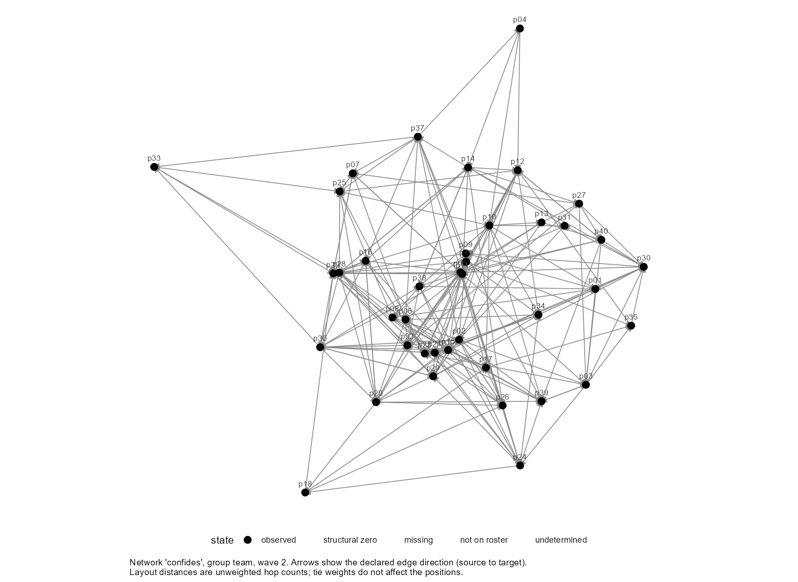
Compare it with the first survey's network on page A6. The model explains the difference between the two.
The coefficients
plot(fit)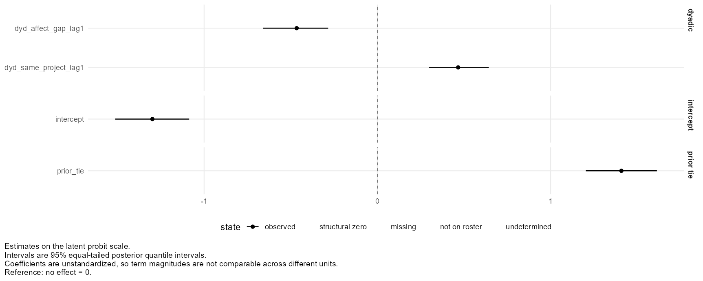
This is the coefficient table as a picture. An interval that stays clear of the dashed line belongs to a term the data support. The horizontal axis is the probit scale, so the distances are not probabilities: use selection_effect() for those.
The fit check
plot(fit, what = "gof")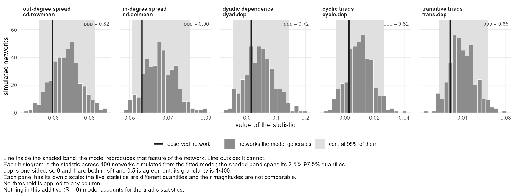
Look at where each line falls in its histogram. A line inside the shaded band means the model generates networks like yours on that feature. A line out in a tail, or beyond the histogram altogether, means the model cannot produce what you observed. Here every line is inside its band.
Who confides widely, and who is confided in
plot(fit, what = "actor_effects")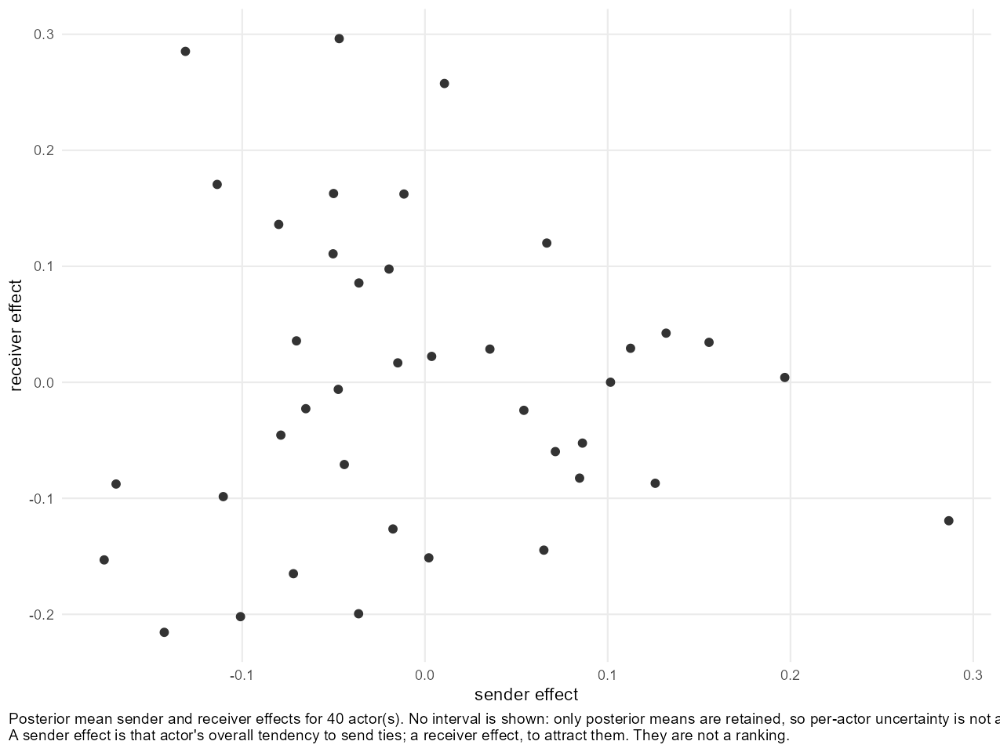
A person far to the right confides in more people than the predictors explain. A person high up is confided in by more. The two need not go together.
The chain, drawn
plot(fit, what = "trace")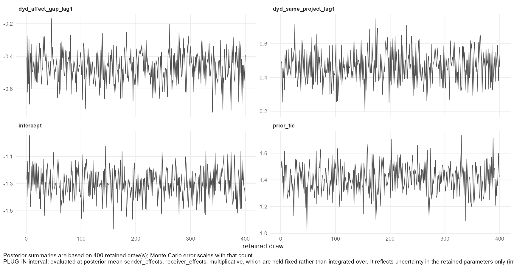
A chain that has settled looks like a level band of noise. A drift up or down, or long flat stretches, means the chain needs to be longer.
Other plots, and options
| Call | What it draws |
|---|---|
plot(team, variable = "confides", wave = 1, layout = "mds") | The network at the first survey |
plot(fit2) | The coefficients of the model with extraversion |
plot(fit, what = "posterior") | The draws for each coefficient, as a density |
plot(fit, what = "mcmc") | R-hat and effective sample size, per coefficient |
plot(fit, what = "heterogeneity") | The sender and receiver variances |
plot(fit_latent, what = "latent") | The latent coordinates: page B7 |
plot(fit_separate, what = "groups") | Each team's estimates: page B8 |
Every plot is a ggplot object, so you can add a title or a theme with +. plot_data() with the same arguments returns the table behind a plot.
The latent-factor selection model
This page fits the same model with latent factors added, which let the model pick up patterns of who confides in whom that the measured predictors do not explain.
Where we are
So far the model explains a tie by the sender, the receiver and measured characteristics of the pair. It has no way to say that two particular people have an affinity that nobody measured, or that the team falls into clusters. The fit check on page B5 is how you find out whether that matters: clustering shows up in the two triad features.
The idea
Give every person a position in a small hidden space, twice: once as a sender and once as a receiver. A tie from one person to another is likelier when the sender's position and the receiver's position point the same way. These are latent factors, also called multiplicative effects, and R is how many dimensions the space has.
If you have read the Influence pages, this is close to the latent space on page A7, with a different job. There the positions were an adjustment, used to protect another coefficient. Here they are part of the model of who ties to whom.
Run it
The formula is unchanged. R = 2 adds two latent dimensions.
fit_latent <- fit_selection(
confides ~ dyad(affect_gap, lag = 1) + dyad(same_project, lag = 1) +
prior_tie(lag = 1),
data = team, R = 2,
nscan = 10000, burn = 500, odens = 25, seed = 1
)
fit_latent<netis_selection>
confides ~ dyad(affect_gap, lag = 1) + dyad(same_project, lag = 1) + prior_tie(lag = 1)
Outcome family: binary tie (probit)
Groups: 1 (team)
Backend: amen::ame(), one observed network per group
Waves: analyzed 1 -> 2 of 2 present; 0 waves not used
Coefficients:
Term Estimate Post.SD 95% interval Est/SD Tail prob.
intercept -1.3122 0.0986 [-1.5016, -1.1270] -13.313 <0.005 **
dyd_affect_gap_lag1 -0.4790 0.0905 [-0.6449, -0.3101] -5.294 <0.005 **
dyd_same_project_lag1 0.4679 0.0903 [0.2829, 0.6485] 5.179 <0.005 **
prior_tie 1.4387 0.1105 [1.2375, 1.6615] 13.025 <0.005 **
---
Signif. codes: 0 '***' 0.001 '**' 0.01 '*' 0.05 '.' 0.1 ' ' 1
Posterior summaries, not tests. Estimate is the posterior mean; Est/SD is its ratio to
the posterior SD; Tail prob. is twice the posterior probability that the coefficient
has the opposite sign, and the marks are on that. It is counted from the retained
draws, so its resolution is 2 / (number of draws).
1560 observed dyads among 40 actors
Pseudo R-squared: latent-scale variance share 0.292 [0.236, 0.350]; Tjur's D 0.264.
What each measures: pseudo_r2(fit).
Posterior predictive check (400 simulated networks): the observed network is inside the
simulated 95% range on 5 of 5 statistics.
Table: netis_gof(fit). Histograms: plot(fit, what = "gof").
Fit-time findings: 0 WARNING, 2 NOTE; netis_diagnostics(fit) lists them. More: summary(fit).Reading it
The coefficient table has the same rows. Compare the estimates with the model that has no latent factors:
round(rbind(additive = coef(fit), latent = coef(fit_latent)), 2)intercept dyd_affect_gap_lag1 dyd_same_project_lag1 prior_tie additive -1.30 -0.47 0.47 1.41 latent -1.31 -0.48 0.47 1.44
They have barely moved. Then compare the fit check, feature by feature:
both <- merge(netis_gof(fit), netis_gof(fit_latent), by = "statistic",
suffixes = c(".additive", ".latent"))
both[, c("statistic", "observed.additive", "ppp.additive", "ppp.latent")]statistic observed.additive ppp.additive ppp.latent 1 cycle.dep 0.0028596 0.8175 0.7600 2 dyad.dep 0.0143173 0.7175 0.6825 3 sd.colmean 0.0564610 0.8975 0.9025 4 sd.rowmean 0.0593718 0.8250 0.8350 5 trans.dep 0.0042699 0.8500 0.8175
The model without latent factors already reproduced all five features, and the latent factors do not change that. In these data they were not needed. That is a result worth reporting, because it says you looked: adding two latent dimensions did not change the estimates or the fit check.
When they are needed. If the two triad features fall outside their ranges without latent factors and inside with them, the latent factors have found structure the predictors missed, and the model with them is the one to report.
See the space
plot(fit_latent, what = "latent")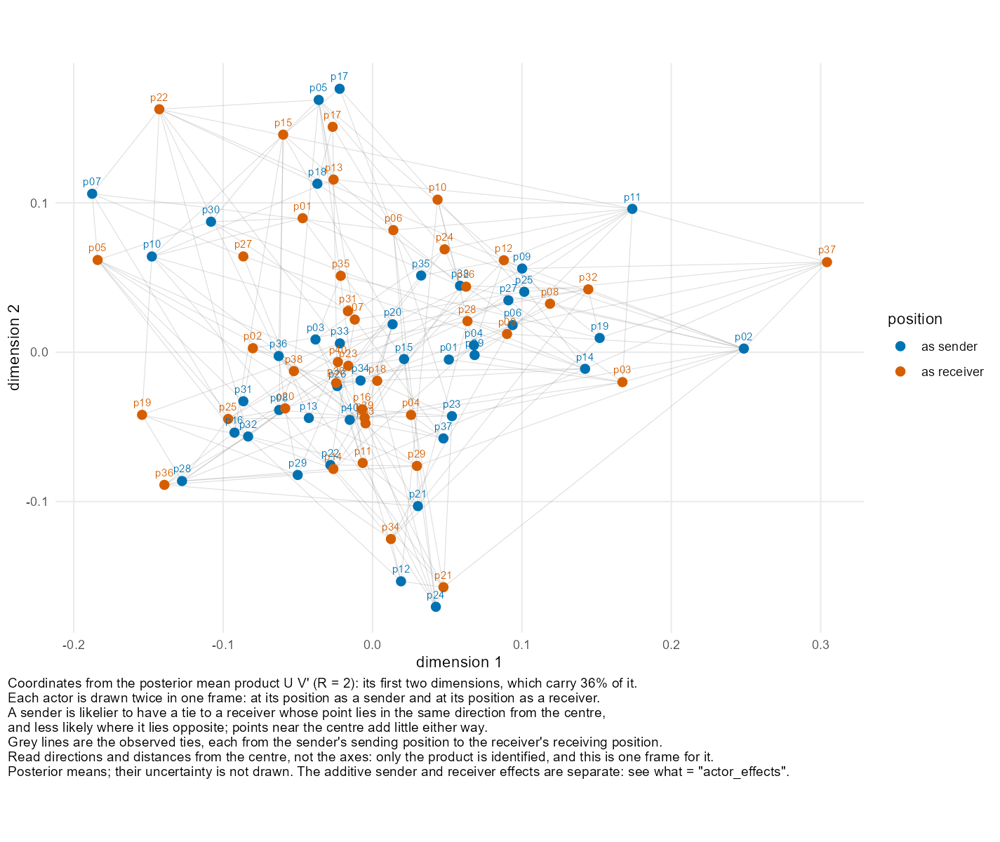
Read a blue point against an orange point. A person is likelier to confide in someone whose orange point lies in the same direction from the centre as their own blue point, and less likely where the two lie in opposite directions. People near the centre are barely affected. The axes themselves mean nothing, because the space can be rotated without changing the model.
The grey lines show the ties the model was fitted to. If the latent factors were capturing structure, the lines would mostly join blue and orange points on the same side of the centre, and few would cross it. Here the points form one cloud with no separate groups and the lines run in every direction, which is what not needed looks like.
How many dimensions?
Start with R = 1 or R = 2 and look at the fit check. Raise R only while the features that were outside their ranges keep moving inside. Each dimension adds two numbers per person, estimated from the same ties, so a larger R makes everything noisier and the chain slower. With R = 1:
fit_latent1 <- fit_selection(
confides ~ dyad(affect_gap, lag = 1) + dyad(same_project, lag = 1) +
prior_tie(lag = 1),
data = team, R = 1,
nscan = 10000, burn = 500, odens = 25, seed = 1
)
round(coef(fit_latent1), 2) intercept dyd_affect_gap_lag1 dyd_same_project_lag1 prior_tie
-1.30 -0.48 0.46 1.43 Where the coordinates come from
The model does not identify each person's position, only the product of a sender's position and a receiver's. Within the chain the positions rotate freely from draw to draw, so averaging them would blur everything toward the centre. rnetis therefore keeps the average of the product, and what = "latent" computes coordinates from that one table, choosing the two directions that carry most of it. The caption on the plot says how much of the product those two directions carry.
This way of drawing the coordinates is rnetis's own display choice. what = "multiplicative" shows the product itself, one cell per ordered pair:
plot(fit_latent, what = "multiplicative")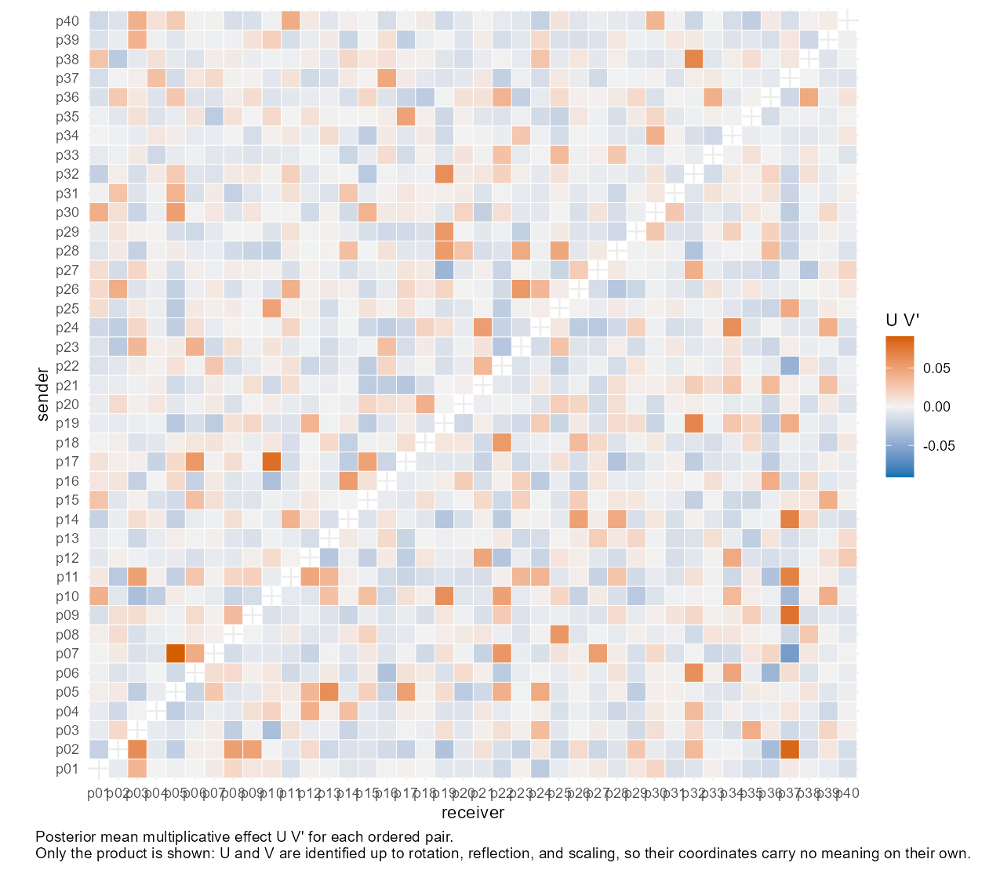
Why the coefficients can move when latent factors are added
A probit model fixes its leftover variance at 1 to set its scale. When latent factors explain part of what was leftover, everything else is measured against a smaller remainder, and the coefficients can all grow together. That is a change of scale and not a change in the effects. Compare models with selection_effect(), which is on the probability scale.
The multilevel selection model
This page moves from one team to ten. The call is the same, and rnetis fits each team's network and combines the results.
Where we are
Everything so far used one team of forty. With several teams, a tie can only exist inside a team: nobody in one team could have confided in someone in another. Ten teams are therefore ten networks, and stacking them into one would treat every pair across teams as a tie that was possible and did not happen.
The data
demo_affect_teams is the dataset from page A8: ten teams of twenty people, with the same variables and the same planted effects.
demo_affect_teams<netis_data>
200 nodes in 10 groups, 3800 ties, directed, 2 waves, self-ties prohibited
node variables: static: extraversion, tenure, remote, project; dynamic: affect
tie variables: static: same_project, affect_gap, advice, talk; dynamic: confides
tie network semantics:
same_project: binary (inferred), complete_dyadic (inferred)
affect_gap: weighted, complete_dyadic (inferred)
confides: binary (inferred), value_rule
advice: binary (inferred), value_rule
talk: weighted, value_rule
no group_data suppliedRun it
The call does not change. rnetis sees ten groups, fits the model to each team's network separately, and then pools the ten sets of coefficients into one. The chains here are shorter than on the earlier pages, to keep ten fits to a few minutes.
fit_teams <- fit_selection(
confides ~ dyad(affect_gap, lag = 1) + dyad(same_project, lag = 1) +
prior_tie(lag = 1),
data = demo_affect_teams,
nscan = 3000, burn = 500, odens = 10, seed = 1
)
summary(fit_teams) Formula: confides ~ dyad(affect_gap, lag = 1) + dyad(same_project, lag = 1) + prior_tie(lag = 1)
Family: binary tie (probit)
Groups: 10
Backend: amen::ame(), one observed network per group
Waves: analyzed 1 -> 2 of 2 present; 0 waves not used
Coefficients are on the latent probit scale, not a probability or odds scale: exp(coefficient) is not an odds ratio for this model. Because they shift with the modeled sender, receiver, and dyadic heterogeneity, comparing them across specifications is not like comparing linear regression coefficients. Report probability-scale contrasts for magnitude.
Coefficients pooled across 10 groups by two-stage common-beta precision weighting.
This assumes beta is COMMON across groups: there is no between-group variance
component, so heterogeneity in beta is assumed away rather than estimated.
Pooling is coefficient-wise, so no covariance between coefficients survives
it -- per-coefficient intervals are valid, joint tests are not.
Coefficients:
Term Estimate SE 95% interval z value Pr(>|z|)
intercept -1.1684 0.0640 [-1.2939, -1.0430] -18.254 <0.001 ***
dyd_affect_gap_lag1 -0.6317 0.0597 [-0.7487, -0.5146] -10.577 <0.001 ***
dyd_same_project_lag1 0.4768 0.0574 [0.3644, 0.5892] 8.314 <0.001 ***
prior_tie 1.4294 0.0630 [1.3060, 1.5529] 22.692 <0.001 ***
---
Signif. codes: 0 '***' 0.001 '**' 0.01 '*' 0.05 '.' 0.1 ' ' 1
z tests from the pooled estimates and their standard errors, on the normal quantile:
two-stage pooling keeps no pooled draws to count a tail probability from.
Model fit:
3800 observed dyads in 10 groups
Pseudo R-squared across 10 groups: latent-scale variance share median 0.349, range
0.277 to 0.407; Tjur's D median 0.306, range 0.219 to 0.376. One group:
pseudo_r2(fit, group = ).
Posterior predictive check (300 simulated networks per group): the observed network
is inside the simulated 95% range on 46 of 50 group-by-statistic checks. Outside:
sd.rowmean (2 groups), sd.colmean (2 groups).
Table: netis_gof(fit). Histograms: plot(fit, what = "gof").
Statistic Measures Groups inside 95% range
sd.rowmean out-degree spread 8 of 10
sd.colmean in-degree spread 8 of 10
dyad.dep dyadic dependence 10 of 10
cycle.dep cyclic triads 10 of 10
trans.dep transitive triads 10 of 10
Fit-time findings: 0 WARNING, 2 NOTE. List them with netis_diagnostics(fit).Reading it
The selection effect is -0.63, and with ten teams its interval is narrower than it was with one. Three things are new:
- The pooling paragraph. The coefficients were combined by weighting each team's estimate by its precision. That assumes the effect is the same in every team. If the teams truly differ, this model does not tell you.
SE,z valueandPr(>|z|). The pooled table reports ordinary tests. Pooling combines ten estimates and their standard errors, so there are no pooled draws to summarise.- The fit check counts teams. Each team has its own network and its own five features, so the check reports how many of the fifty team-by-feature comparisons fall inside their range. Here four fall outside, all of them about how unequally people in a team send or receive ties.
Do the teams agree?
Pooling is only sensible if the teams tell the same story. Fit them separately, with pool_beta = FALSE, and look:
fit_separate <- fit_selection(
confides ~ dyad(affect_gap, lag = 1) + dyad(same_project, lag = 1) +
prior_tie(lag = 1),
data = demo_affect_teams, pool_beta = FALSE,
nscan = 3000, burn = 500, odens = 10, seed = 1
)
round(coef(fit_separate), 2)intercept dyd_affect_gap_lag1 dyd_same_project_lag1 prior_tie team01 -1.09 -0.65 0.53 1.08 team02 -1.19 -0.76 0.47 1.31 team03 -1.08 -0.55 0.41 1.44 team04 -1.50 -0.36 0.34 1.71 team05 -1.08 -0.66 0.49 1.33 team06 -1.02 -0.81 0.52 1.66 team07 -1.09 -0.76 0.45 1.53 team08 -1.27 -0.76 0.72 1.33 team09 -1.44 -0.43 0.38 1.69 team10 -1.08 -0.63 0.45 1.22
plot(fit_separate, what = "groups")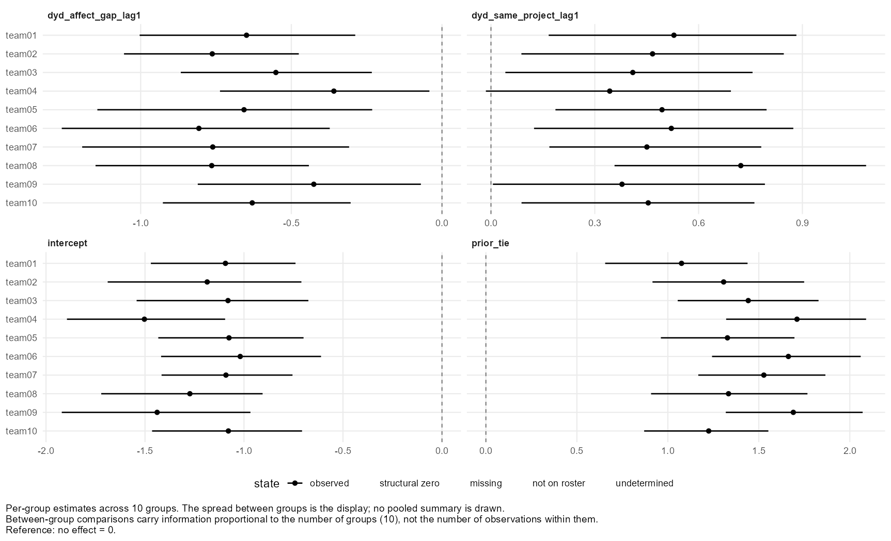
The selection effect ranges from -0.81 to -0.36 across the ten teams, and the intervals overlap heavily. That is what agreement looks like, and it is what makes the pooled estimate a fair summary. If the intervals barely overlapped, the difference between teams would be the finding, and pooling would hide it.
One model for all teams: the hierarchical fit
A third option fits all ten teams in one model and lets chosen coefficients differ from team to team around a common average. Teams with little information are pulled toward the average. selection_pooling(random = ...) names the coefficients that may differ:
fit_hier <- fit_selection(
confides ~ dyad(affect_gap, lag = 1) + dyad(same_project, lag = 1) +
prior_tie(lag = 1),
data = demo_affect_teams,
pooling = selection_pooling(random = c("intercept", "dyd_affect_gap_lag1")),
nscan = 3000, burn = 500, odens = 10, chains = 2, seed = 1
)
fit_hier<netis_selection>
confides ~ dyad(affect_gap, lag = 1) + dyad(same_project, lag = 1) + prior_tie(lag = 1)
Outcome family: binary tie (probit)
Groups: 10 (team01, team02, team03, team04, ...)
Backend: rnetis hierarchical sampler -- every group in one chain, using amen's conditional updates (see ?hierarchical_selection)
Waves: analyzed 1 -> 2 of 2 present; 0 waves not used
Shared across groups: dyd_same_project_lag1, prior_tie
Varying across groups (random), diagonal between-group covariance: intercept, dyd_affect_gap_lag1
Coefficients:
Term Regime Estimate Post.SD 95% interval Est/SD Tail prob.
intercept random (mean) -1.1612 0.0687 [-1.2925, -1.0223] -16.901 <0.003 **
dyd_affect_gap_lag1 random (mean) -0.6352 0.0652 [-0.7668, -0.5048] -9.745 <0.003 **
dyd_same_project_lag1 shared 0.4746 0.0577 [0.3638, 0.5874] 8.222 <0.003 **
prior_tie shared 1.4307 0.0592 [1.3068, 1.5425] 24.159 <0.003 **
---
Signif. codes: 0 '***' 0.001 '**' 0.01 '*' 0.05 '.' 0.1 ' ' 1
Posterior summaries, not tests. Estimate is the posterior mean; Est/SD is its ratio to
the posterior SD; Tail prob. is twice the posterior probability that the coefficient
has the opposite sign, and the marks are on that. It is counted from the retained
draws, so its resolution is 2 / (number of draws).
3800 observed dyads in 10 groups
Pseudo R-squared and the posterior predictive check are not defined for a hierarchical
fit (see ?pseudo_r2 and ?netis_gof).
Fit-time findings: 0 WARNING, 2 NOTE; netis_diagnostics(fit) lists them. More: summary(fit).The Regime column says which coefficients are shared by all teams and which vary. For a varying coefficient the table reports the average across teams. netis_hierarchy(fit_hier) gives the spread between teams and each team's own value.
The hierarchical fit is experimental. It is this package's own construction and has not been validated for statistical performance against alternatives: see ?hierarchical_selection. A conclusion that rests on it alone should say so. The pseudo R-squared and the fit check are not available for it, so check the teams separately.
Other settings
| Call | What it fits |
|---|---|
fit_selection(..., data = teams) | Each team separately, then pooled into one set of coefficients |
pool_beta = FALSE | Each team separately, results kept apart |
pooling = selection_pooling(random = ...) | One hierarchical model for all teams (experimental) |
R = 2 | Latent factors, with one space per team |
The functions and plots from pages B5 and B6 work on a multi-team fit. Those that describe one network need a team: plot(fit_separate, what = "actor_effects", group = "team01").
How many teams is enough?
Pooling works with any number of teams, and each added team narrows the pooled interval. Judging whether teams differ needs more: ten teams give only a rough idea of how much an effect varies between them.
Where to go from here
That is the Selection sequence: a model you can fit, read, check, plot, extend with latent factors, and run across several groups. Together with the Influence sequence it answers both questions about the same team: people's affect moved toward that of their confiders, and people came to confide in others whose affect was like theirs. For the choices these pages made for you, and what the alternatives change, read the advanced walkthrough.
Advanced walkthrough: Influence
This page goes back over the Influence sequence and shows the choices the main pages made for you: what the alternatives are at each step, and what each one changes.
Before you start
This page assumes you have read the Influence sequence, A1 to A8. It uses the same team and the same model, and every block changes one decision about that model, so each result can be compared with the one you already know: a contagion effect of about 0.48.
library(rnetis)
team <- demo_affect
teams <- demo_affect_teams
fit <- fit_influence(
affect ~ ar() +
exposure(affect, via = confides, x_lag = 1, w_lag = 1, normalize = "row"),
data = team
)
round(coef(fit), 4) (Intercept) affect_lag1 ex_affect_confides
0.2192 0.4463 0.4828 The sections follow the order of an analysis: the data, the exposure term, the rest of the formula, the fitted model, the latent space, several teams, and planning a study. The page ends with a table of functions.
Check the data before modelling it
diagnose_data() reads a data object and reports anything that would cause trouble later: variables that never vary, people with no ties, waves with missing rows.
diagnose_data(team)<netis_diagnostics: no findings>
This team has nothing to report. On your own data, run it before the first model. A problem found here costs a line of output, and the same problem found later costs a model that fits and misleads.
The declarations that change every later number
Three things are declared when the data object is built, and each changes what an exposure term computes.
| Declaration | The alternatives | What it changes |
|---|---|---|
| What a zero means | zero_meaning = "measured_zero", or leave pairs out | Whether a pair with no tie was observed as a non-tie or was never asked about |
| Direction | directed = TRUE (default) or FALSE | Whether i to j and j to i are two ties or one |
| Weights | weighted = TRUE, or a 0/1 column | Whether stronger ties carry more of the content |
rnetis never guesses these. A pair missing from the tie table is not treated as a zero, and a zero is not treated as missing, unless you say so.
Exposure is a column you can look at
In a model you write exposure() inside the formula. To see the numbers it produces, compute_exposure() returns the same quantity as an ordinary column:
ex <- compute_exposure(team, content = "affect", via = "confides",
normalize = "row", wave = 1)
head(ex)group node ex_affect_confides 1 team p01 3.0080 2 team p02 3.1783 3 team p03 2.8200 4 team p04 3.7200 5 team p05 3.0578 6 team p06 2.6900
Each value is the average first-survey affect of the people who confide in that person. Looking at this column once on your own data is a good check that the exposure means what you intend.
With that column in hand, the whole model can be fitted by hand with lm():
people <- netis_nodes(team)
by_hand <- data.frame(
affect_now = people$affect[people$wave == 2],
affect_before = people$affect[people$wave == 1],
exposure = ex$ex_affect_confides[match(people$node[people$wave == 2], ex$node)]
)
round(coef(lm(affect_now ~ affect_before + exposure, data = by_hand)), 4) (Intercept) affect_before exposure
0.2192 0.4463 0.4828 The coefficients are the same as the ones at the top of the page. ar() and exposure() are shorthand for columns, and the estimator is ordinary least squares. What fit_influence() adds is the bookkeeping: matching people across waves, building the exposure from the right wave, handling people with no ties, and recording every decision.
Use compute_exposure() for looking and exposure() for fitting. A model fitted to a column you built by hand does not know how that column was made.
Average or total exposure
normalize decides how a person's ties are combined. The two settings answer different questions.
| Setting | What it computes | The question it answers |
|---|---|---|
normalize = "row" | The average over a person's ties | What are the people around me like? |
normalize = "none" (the default) | The total over a person's ties | How much reaches me altogether? |
total <- compute_exposure(team, content = "affect", via = "confides", wave = 1)
compare <- data.frame(node = ex$node, average = round(ex$ex_affect_confides, 2),
total = total$ex_affect_confides)
head(compare)node average total 1 p01 3.01 15.04 2 p02 3.18 19.07 3 p03 2.82 2.82 4 p04 3.72 7.44 5 p05 3.06 27.52 6 p06 2.69 5.38
The two columns rank people differently. Someone with many confiders has a large total even if each confider's affect is ordinary. Choose by theory: a norm or a climate is an average, and a dose or a load is a total. The data here were built with an average, which is why page A4 found nothing with the total.
People with nobody to average over
An average needs at least one tie. To see what happens without one, count two people as tied only if they talk four or more hours a week:
# Count only pairs who talk four or more hours a week as tied.
close <- compute_exposure(team, content = "affect",
via = binarize(talk, threshold(4)),
normalize = "row", wave = 1)
sum(is.na(close$ex_affect_bin_talk))[1] 10
Those people have no close contacts, so their average exposure is undefined and is recorded as missing. The model then leaves them out, and says how many rows it used:
fit_close <- fit_influence(
affect ~ ar() +
exposure(affect, via = binarize(talk, threshold(4)), x_lag = 1, w_lag = 1,
normalize = "row"),
data = team
)
fit_close<netis_influence>
affect ~ ar() + exposure(affect, via = binarize(talk, threshold(4)), x_lag = 1, w_lag = 1, normalize = "row")
Estimator: pooled ordinary least squares (the formula declares no random-effects term) [backend: stats]
Waves: analyzed 1 -> 2 of 2 present; 0 waves not used
30 rows in the estimating sample (10 of 40 assembled rows dropped as incomplete)
Coefficients:
Term Estimate SE 95% interval df t value Pr(>|t|)
(Intercept) 1.0094 0.3141 [0.3649, 1.6540] 27 3.213 0.003 **
affect_lag1 0.4570 0.0825 [0.2877, 0.6263] 27 5.539 <0.001 ***
ex_affect_bin_talk 0.2018 0.1044 [-0.0125, 0.4161] 27 1.932 0.064 .
---
Signif. codes: 0 '***' 0.001 '**' 0.01 '*' 0.05 '.' 0.1 ' ' 1
Residual standard error: 0.3108 on 27 degrees of freedom
R-squared: 0.6457, adjusted: 0.6195
Assumptions: this fit rests on 8 assumptions (2 not testable). netis_assumptions(fit)
lists them.
Fit-time findings: 2; netis_diagnostics(fit) lists them. More: summary(fit).isolate_rule controls this, and there are three choices.
| Setting | What happens to a person with no ties |
|---|---|
isolate_rule = "na" (the default) | Exposure is missing, and the person is left out of the model |
isolate_rule = "zero" | Exposure is set to 0, and the person stays in |
isolate_rule = "error" | The fit stops, so you find out that isolates exist |
fit_zero <- fit_influence(
affect ~ ar() +
exposure(affect, via = binarize(talk, threshold(4)), x_lag = 1, w_lag = 1,
normalize = "row", isolate_rule = "zero"),
data = team
)
round(rbind(dropped = coef(fit_close), as_zero = coef(fit_zero)), 3)(Intercept) affect_lag1 ex_affect_bin_talk dropped 1.009 0.457 0.202 as_zero 1.486 0.548 -0.051
Setting the exposure to zero keeps everyone and changes the estimate. Affect here runs from about 1 to 5, so a zero is far below any value a real average could take, and the people given it pull the line toward themselves. Use it only when zero is a meaningful exposure, which it is for a total and rarely is for an average. When you expect no isolates at all, ask rnetis to stop:
fit_influence(
affect ~ ar() +
exposure(affect, via = binarize(talk, threshold(4)), x_lag = 1, w_lag = 1,
normalize = "row", isolate_rule = "error"),
data = team
)Error: Row-normalization requested but 10 node(s) have no reference-set members (isolates), so their normalized exposure denominator is undefined: p02, p03, p08, p14, p25. Set isolate_rule to "na" or "zero", or use normalize = "none".
Weighted or binary ties
talk is a count of hours. Used as it is, each contact is weighted by how much the pair talks. binarize() turns it into a yes/no tie by a rule you name. The table shows the exposure coefficient under four readings of the same variable:
one <- function(via_term) {
f <- as.formula(sprintf(
"affect ~ ar() + exposure(affect, via = %s, x_lag = 1, w_lag = 1, normalize = \"row\")",
via_term))
est <- netis_estimates(fit_influence(f, data = team))
round(unlist(est[3, c("estimate", "std.error", "conf.low", "conf.high")]), 2)
}
rbind(
"talk, as hours" = one("talk"),
"talk, any at all" = one("binarize(talk, nonzero())"),
"talk, 2 hours or more" = one("binarize(talk, threshold(2))"),
"talk, above the team mean" = one("binarize(talk, above_mean())")
)estimate std.error conf.low conf.high talk, as hours 0.62 0.40 -0.19 1.44 talk, any at all -0.02 0.65 -1.33 1.29 talk, 2 hours or more 0.15 0.16 -0.18 0.48 talk, above the team mean 0.45 0.29 -0.14 1.03
The estimate depends on the rule. A threshold changes who counts as a contact at all, so it changes the people each average is taken over. That is why the rule is something you write down and not a default.
| Rule | A tie exists where |
|---|---|
nonzero() | the value is not zero |
positive() | the value is above zero |
threshold(c) | the value is at least c |
above_mean(), above_median() | the value is above the network's mean or median |
quantile_threshold(q) | the value is in the top share q |
custom_binarize_rule(...) | your own function says so |
If the binary version is what you measured, store it as its own column of the tie table. binarize() in a formula is for trying a different reading of a network you also use as it is.
Direction, and more than one network
The default reads a tie as running from source to target: affect reaches a person from those who confide in them. Two other readings are one function away.
rbind(
"from those who confide in me" = one("confides"),
"either direction (symmetrized)" = one("symmetrize(confides, \"max\")"),
"confides or advice (union)" = one("multiplex(confides, advice, combine = \"union\")")
)estimate std.error conf.low conf.high from those who confide in me 0.48 0.18 0.12 0.84 either direction (symmetrized) 0.38 0.29 -0.20 0.97 confides or advice (union) 0.52 0.34 -0.17 1.20
symmetrize(confides, "max")treats a tie in either direction as a connection. The rule says how to combine the two directions:"max","min","sum"or"mean".multiplex(confides, advice, combine = "union")makes one network out of two."union"keeps a tie present in either, and"intersection"keeps only ties present in both.direction = "target_influences_source"insideexposure()reverses the flow, as page A4 showed.
Combining networks assumes a rule. The alternative is to give each network its own exposure term and let the model say which one carries the effect:
fit_two <- fit_influence(
affect ~ ar() +
exposure(affect, via = confides, x_lag = 1, w_lag = 1, normalize = "row") +
exposure(affect, via = advice, x_lag = 1, w_lag = 1, normalize = "row"),
data = team
)
fit_two<netis_influence>
affect ~ ar() + exposure(affect, via = confides, x_lag = 1, w_lag = 1, normalize = "row") + exposure(affect, via = advice, x_lag = 1, w_lag = 1, normalize = "row")
Estimator: pooled ordinary least squares (the formula declares no random-effects term) [backend: stats]
Waves: analyzed 1 -> 2 of 2 present; 0 waves not used
40 rows in the estimating sample
Coefficients:
Term Estimate SE 95% interval df t value Pr(>|t|)
(Intercept) -0.1863 0.7634 [-1.7344, 1.3619] 36 -0.244 0.809
affect_lag1 0.4412 0.0779 [0.2831, 0.5992] 36 5.662 <0.001 ***
ex_affect_confides 0.5031 0.1817 [0.1347, 0.8716] 36 2.769 0.009 **
ex_affect_advice 0.1222 0.1768 [-0.2363, 0.4807] 36 0.691 0.494
---
Signif. codes: 0 '***' 0.001 '**' 0.01 '*' 0.05 '.' 0.1 ' ' 1
Residual standard error: 0.3151 on 36 degrees of freedom
R-squared: 0.6547, adjusted: 0.6259
Assumptions: this fit rests on 8 assumptions (2 not testable). netis_assumptions(fit)
lists them.
Fit-time findings: none. More: summary(fit).Confiding carries the effect and advice does not, which is how the data were built.
Timing
x_lag and w_lag say when the content and the network were measured, counted back from the outcome's wave. The main pages use 1 for both. Setting w_lag = 0 keeps earlier affect as the content and takes the network from the later survey:
fit_wlag <- fit_influence(
affect ~ ar() +
exposure(affect, via = confides, x_lag = 1, w_lag = 0, normalize = "row"),
data = team
)
round(rbind("network at wave 1 (w_lag = 1)" = coef(fit),
"network at wave 2 (w_lag = 0)" = coef(fit_wlag)), 3)(Intercept) affect_lag1 ex_affect_confides network at wave 1 (w_lag = 1) 0.219 0.446 0.483 network at wave 2 (w_lag = 0) 0.443 0.361 0.494
That asks a different question: whether a person's affect follows the earlier affect of the people who confide in them now. It also lets the network be a result of the change you are explaining, so use it only when the theory calls for it.
Setting both lags to 0 makes the exposure contemporaneous: affect now explained by confiders' affect now. Everyone's outcome is then on both sides of the equation, and ordinary least squares is no longer valid. rnetis switches estimator and says so:
fit_sar <- fit_influence(
affect ~ ar() +
exposure(affect, via = confides, x_lag = 0, w_lag = 0, normalize = "row"),
data = team
)
fit_sar<netis_influence>
affect ~ ar() + exposure(affect, via = confides, x_lag = 0, w_lag = 0, normalize = "row")
Estimator: simultaneous network autocorrelation (sna::lnam) (the formula puts the outcome's own contemporaneous network exposure on the right-hand side) [backend: lnam]
Waves: analyzed 1 -> 2 of 2 present; 0 waves not used
40 rows in the estimating sample
Simultaneous system: rho = 0.4183, spectral radius of W1 = 1.0000
Smallest eigenvalue modulus of (I - rho * W1), min |1 - rho * lambda| over the eigenvalues of W1: 0.5817. It is not zero, so (I - rho * W1) is invertible and the reduced form exists.
Coefficients:
Term Estimate SE 95% interval z value Pr(>|z|)
(Intercept) 0.3613 0.6394 [-0.8920, 1.6146] 0.565 0.572
affect_lag1 0.4596 0.0839 [0.2952, 0.6240] 5.478 <0.001 ***
ex_affect_confides 0.4183 0.2421 [-0.0562, 0.8928] 1.728 0.084 .
---
Signif. codes: 0 '***' 0.001 '**' 0.01 '*' 0.05 '.' 0.1 ' ' 1
z tests: maximum likelihood with asymptotically normal inference, as sna::lnam reports.
Residual SD: 0.3175; 40 rows
R-squared: not defined for a simultaneous (SAR) fit (see ?pseudo_r2)
Assumptions: this fit rests on 8 assumptions (2 not testable). netis_assumptions(fit)
lists them.
Fit-time findings: none. More: summary(fit).The header names the estimator, a simultaneous network autocorrelation model fitted through the sna package, and reports the quantities that say whether the system is well behaved. Its table reports z tests and has no R-squared. This is a different model from the lagged one, with different assumptions, and its coefficient is not comparable with the one from pages A1 to A8.
Covariates and moderation
A bare variable name adds a covariate at its value in the outcome's wave. lagged() adds it at its earlier value, which is the safer choice for anything that could itself respond to the outcome:
fit_cov <- fit_influence(
affect ~ ar() +
exposure(affect, via = confides, x_lag = 1, w_lag = 1, normalize = "row") +
lagged(extraversion) + tenure,
data = team
)
fit_cov<netis_influence>
affect ~ ar() + exposure(affect, via = confides, x_lag = 1, w_lag = 1, normalize = "row") + lagged(extraversion) + tenure
Estimator: pooled ordinary least squares (the formula declares no random-effects term) [backend: stats]
Waves: analyzed 1 -> 2 of 2 present; 0 waves not used
40 rows in the estimating sample
Coefficients:
Term Estimate SE 95% interval df t value Pr(>|t|)
(Intercept) 0.2664 0.4986 [-0.7459, 1.2786] 35 0.534 0.597
affect_lag1 0.4199 0.0848 [0.2478, 0.5920] 35 4.953 <0.001 ***
extraversion_lag1 0.0418 0.0522 [-0.0642, 0.1477] 35 0.801 0.429
ex_affect_confides 0.4939 0.1833 [0.1217, 0.8660] 35 2.694 0.011 *
tenure -0.0008 0.0207 [-0.0428, 0.0412] 35 -0.039 0.969
---
Signif. codes: 0 '***' 0.001 '**' 0.01 '*' 0.05 '.' 0.1 ' ' 1
Residual standard error: 0.3187 on 35 degrees of freedom
R-squared: 0.6567, adjusted: 0.6175
Assumptions: this fit rests on 8 assumptions (2 not testable). netis_assumptions(fit)
lists them.
Fit-time findings: 1; netis_diagnostics(fit) lists them. More: summary(fit).To ask whether contagion is stronger for some people than others, multiply the exposure term by a covariate. Here the question is whether it differs for people who work remotely:
fit_mod <- fit_influence(
affect ~ ar() +
exposure(affect, via = confides, x_lag = 1, w_lag = 1, normalize = "row") * remote,
data = team
)
fit_mod<netis_influence>
affect ~ ar() + exposure(affect, via = confides, x_lag = 1, w_lag = 1, normalize = "row") * remote
Estimator: pooled ordinary least squares (the formula declares no random-effects term) [backend: stats]
Waves: analyzed 1 -> 2 of 2 present; 0 waves not used
40 rows in the estimating sample
Coefficients:
Term Estimate SE 95% interval df t value Pr(>|t|)
(Intercept) -0.1441 0.5849 [-1.3314, 1.0433] 35 -0.246 0.807
affect_lag1 0.4511 0.0840 [0.2806, 0.6216] 35 5.372 <0.001 ***
ex_affect_confides 0.6028 0.2107 [0.1750, 1.0306] 35 2.861 0.007 **
remote 1.1892 1.1884 [-1.2234, 3.6018] 35 1.001 0.324
ex_affect_confides:remote -0.3967 0.3762 [-1.1604, 0.3669] 35 -1.055 0.299
---
Signif. codes: 0 '***' 0.001 '**' 0.01 '*' 0.05 '.' 0.1 ' ' 1
Residual standard error: 0.3159 on 35 degrees of freedom
R-squared: 0.6627, adjusted: 0.6241
Assumptions: this fit rests on 8 assumptions (2 not testable). netis_assumptions(fit)
lists them.
Fit-time findings: none. More: summary(fit).The row ex_affect_confides:remote is the difference in the contagion effect between remote and on-site people. influence_effect() turns the interaction into the effect at each value of the moderator:
influence_effect(fit_mod)Influence effect sizes
Predicted change across the observed 10-to-90 percentile of each exposure, on the outcome's scale.
ex_affect_confides (contrast 2.704 to 3.408)
remote = 0 (reference): coef 0.6028 (95% CI [0.1750, 1.0306]), predicted change 0.4248
remote = 1: coef 0.2061 (95% CI [-0.5023, 0.9145]), predicted change 0.1452
At the moderator's value of 0 the interval excludes zero; the interval's relationship to zero changes at remote = -0.9490 and 0.4464.With forty people the difference is poorly estimated. One rule is enforced: one side of the product must be an ordinary covariate. Two network terms multiplied together are refused, because the result has no clear meaning.
A person's position in the network as a predictor
centrality() adds a person's position as a covariate, here the number of people who confide in them:
fit_cent <- fit_influence(
affect ~ ar() +
exposure(affect, via = confides, x_lag = 1, w_lag = 1, normalize = "row") +
centrality(confides, "degree", mode = "in"),
data = team
)
round(coef(fit_cent), 3) (Intercept) affect_lag1 ex_affect_confides cent_degree_confides
0.554 0.458 0.464 -0.059 network_stat() does the same for a characteristic of the whole network, which is useful with several teams.
Comparing models
An influence model fitted by least squares has a likelihood, so AIC() and BIC() work. They compare models fitted to the same rows, so check the row counts first:
fit_ar <- fit_influence(affect ~ ar(), data = team)
data.frame(
model = c("ar() only", "ar() + exposure()"),
rows = c(netis_glance(fit_ar)$nobs, netis_glance(fit)$nobs),
r.squared = round(c(netis_glance(fit_ar)$r.squared, netis_glance(fit)$r.squared), 3),
AIC = round(c(AIC(fit_ar), AIC(fit)), 1),
BIC = round(c(BIC(fit_ar), BIC(fit)), 1)
)model rows r.squared AIC BIC 1 ar() only 40 0.581 30.7 35.8 2 ar() + exposure() 40 0.650 25.4 32.2
Both models use all forty people, so the comparison is fair. AIC and BIC are lower with the exposure term, and R-squared is higher. Three readings now agree: the interval excludes zero, the information criteria prefer the model, and the effect is large enough to matter. When they disagree, that tells you something specific about the model.
A model that drops people, for instance because they have no ties, is fitted to fewer rows. Its AIC cannot be compared with the AIC of a model that kept them.
Effect sizes and getting numbers out
influence_effect() reports the predicted change in the outcome across a range of exposure. The default range is the 10th to the 90th percentile. probs changes it, here to the middle half of the team:
influence_effect(fit, probs = c(0.25, 0.75))Influence effect sizes
Predicted change across the observed 25-to-75 percentile of each exposure, on the outcome's scale.
ex_affect_confides (contrast 2.875 to 3.163)
coef 0.4828 (95% CI [0.1221, 0.8435]), predicted change 0.1390For tables and further analysis, three functions return data frames in place of printed output.
| Function | Returns |
|---|---|
netis_estimates(fit) | One row per coefficient: estimate, standard error, interval, role |
netis_glance(fit) | One row for the model: estimator, rows, R-squared, residual spread |
netis_estimand(fit) | What the model estimates: the transition and the estimator, with the reason |
netis_estimates(fit) term group estimate std.error conf.low conf.high role
1 (Intercept) <NA> 0.21919 0.485182 -0.76388 1.20226 direct
2 affect_lag1 <NA> 0.44628 0.077016 0.29023 0.60233 stability
3 ex_affect_confides <NA> 0.48281 0.178014 0.12212 0.84350 exposure
scale
1 outcome units
2 outcome units
3 outcome unitstidy() and glance() are the same two functions under the names the broom package uses, and coef(), confint(), vcov(), AIC() and BIC() work as they do for lm().
Choosing the latent space
Page A7 added latent() with two dimensions. Two questions come with it: how many dimensions, and how much the answer depends on the random numbers behind the positions.
latent_fit <- function(d, seed = 1) {
f <- as.formula(sprintf(paste(
"affect ~ ar() +",
"exposure(affect, via = confides, x_lag = 1, w_lag = 1, normalize = \"row\") +",
"latent(confides, d = %d, seed = %d)"), d, seed))
est <- netis_estimates(fit_influence(f, data = team))
round(unlist(est[est$term == "ex_affect_confides",
c("estimate", "std.error", "conf.low", "conf.high")]), 2)
}
rbind("no latent space" = one("confides"),
"d = 1" = latent_fit(1), "d = 2" = latent_fit(2), "d = 3" = latent_fit(3))estimate std.error conf.low conf.high no latent space 0.48 0.18 0.12 0.84 d = 1 0.49 0.18 0.12 0.86 d = 2 0.30 0.20 -0.11 0.70 d = 3 0.30 0.22 -0.15 0.76
There is no test that picks d. Each dimension uses up a coefficient and widens the interval, and the estimate can move a good deal between settings. Report the result at more than one value of d, and say so if the conclusion depends on it.
The positions come from a random sampler, so a different seed gives different positions and a slightly different adjusted estimate:
rbind("seed 1" = latent_fit(2, seed = 1),
"seed 2" = latent_fit(2, seed = 2),
"seed 3" = latent_fit(2, seed = 3))estimate std.error conf.low conf.high seed 1 0.30 0.2 -0.11 0.70 seed 2 0.30 0.2 -0.11 0.71 seed 3 0.35 0.2 -0.06 0.76
The spread across seeds is how much of the adjusted estimate is due to the sampler alone. If it is large beside the interval, the first step needs a longer run, which control = sets. Always fix the seed in work you report.
Argument of latent() | What it does |
|---|---|
d | The number of dimensions |
homophily | Person characteristics the network model accounts for directly: see the box on page A7 |
terms | Further network-model terms, passed to latentnet |
lag | Which wave's network the positions come from |
seed | The random-number seed for the positions |
control | Sampler settings, passed to latentnet::ergmm.control() |
Several teams
Page A8 added (1 | group). Three more quantities describe how much the teams matter, and they are often confused.
fit_teams <- fit_influence(
affect ~ ar() +
exposure(affect, via = confides, x_lag = 1, w_lag = 1, normalize = "row") +
(1 | group),
data = teams
)
netis_variance_components(fit_teams)[, c("grouping", "term", "variance", "sd")]grouping term variance sd 1 group (Intercept) 0.029283 0.17112 2 Residual (residual) 0.091838 0.30305
These are the conditional variances: what is left between teams and within them after the model's predictors.
icc1(fit_teams)ICC(1): 0.5311 [one-way ANOVA, unconditional] grouping: group (10 groups, 200 observations, n0 = 20) Share of outcome variance associated with group membership BEFORE conditioning on this model's predictors. Not the same quantity as netis_variance_components()'s conditional share.
ICC(1) is the share of the outcome's variance that lies between teams before any predictor. It describes the data and not the model, so it is a different number from the conditional share above. ICC(2) is the reliability of a team's average:
icc2(fit_teams)$overall[1] 0.95772
rwg() and rwg_j() measure agreement within a team, which is a third thing again, and netis_reliability() reports the set.
Are the standard errors safe?
influence_se_comparison() puts the model's standard errors beside cluster-robust ones, which allow people in the same team to share unexplained variation:
influence_se_comparison(fit_teams, by = "group")term se_model se_robust ratio pct_change df_satterthwaite 1 (Intercept) 0.193758 0.194480 1.00373 0.37251 7.7776 2 affect_lag1 0.031255 0.029726 0.95108 -4.89221 8.0409 3 ex_affect_confides 0.059410 0.063019 1.06075 6.07550 7.1563
Ratios near 1 mean the two agree. The last column is the degrees of freedom of the robust version: with ten teams it is small, so the robust numbers are themselves rough. On a single team there is nothing to compare, and rnetis says why:
influence_se_comparison(fit)Error: vcov = "cluster" with by = "group" needs more than one group to cluster on, and this fit has one. A clustered sandwich estimates its outer variance from variation ACROSS clusters, so a single cluster supplies one term and no estimate. No variance estimator in rnetis models residual dependence inside a SINGLE network, so rnetis reports that it cannot compute this rather than returning a number from a different model. Do NOT substitute by = "node": clustering on actors assumes actors are independent clusters, which is precisely what residual network dependence violates, so it answers a different question rather than a weaker version of this one.
Planning a study
simulate_influence() generates a network, an outcome and a contagion effect of a size you choose. Fitting the model to simulated data answers a question worth asking before collecting anything: would a study of this size detect the effect I expect?
for (n in c(40, 160, 640)) {
sim <- simulate_influence(n_nodes = n, density = 5 / (n - 1),
gamma = 0.4, beta = 0.5, normalize = "row", seed = 7)
est <- netis_estimates(fit_influence(
y ~ ar() + exposure(y, via = tie, x_lag = 1, w_lag = 1, normalize = "row"),
data = sim$data))
cat(sprintf("%3d people: exposure %5.2f, 95%% interval [%5.2f, %5.2f]\n",
n, est$estimate[3], est$conf.low[3], est$conf.high[3]))
}40 people: exposure 0.98, 95% interval [ 0.29, 1.66] 160 people: exposure 0.51, 95% interval [ 0.21, 0.80] 640 people: exposure 0.42, 95% interval [ 0.30, 0.54]
The true effect is 0.5 in all three. With 40 people the interval is too wide to say much, and it narrows as the team grows. Set n_groups, n_waves, density and the effect sizes to match your own design.
Functions used in an Influence analysis
| Step | Function | What it is for |
|---|---|---|
| Data | netis_data() | Build the data object from a node table and a tie table |
netis_data_from_edgelist(), _from_adjacency(), _from_igraph(), _from_network() | Build it from other formats | |
netis_nodes(), netis_ties(), netis_schema() | Get the tables and the declarations back out | |
diagnose_data() | Report problems in the data before modelling | |
| Exposure | exposure() | The exposure term, inside a formula |
compute_exposure() | The same quantity as a column, for looking | |
binarize() with threshold(), nonzero(), above_mean(), quantile_threshold() | Read a valued tie as yes/no | |
symmetrize(), multiplex() | Combine directions, or combine networks | |
| Formula | ar() | The outcome at the earlier wave |
lagged() | A covariate at its earlier value | |
centrality(), network_stat() | A person's position, or a network's characteristic, as a covariate | |
latent() | The latent-space adjustment | |
(1 | group) | A random intercept across groups | |
| Fitting | fit_influence() | Fit the model |
| Reading | summary(), print() | The fitted model, in full or in brief |
netis_estimates(), netis_glance(), netis_estimand() | The coefficients, the model summary and the estimand, as data | |
coef(), confint(), vcov(), AIC(), BIC() | As for lm() | |
influence_effect() | The predicted change across a range of exposure | |
netis_assumptions() | What the result rests on | |
netis_diagnostics() | What was noticed while fitting | |
| Checking | netis_dependence() | Pattern left in the residuals |
influence_se_comparison() | Model standard errors beside cluster-robust ones | |
| Groups | netis_variance_components() | Variance between and within groups |
icc1(), icc2(), rwg(), rwg_j(), netis_reliability() | Variance share, reliability and agreement | |
| Plotting | plot(data) | The network |
plot(fit), with what = "effects", "latent", "heterogeneity" | Coefficients, effect sizes, latent positions, group differences | |
plot_data() | The table behind any plot | |
| Planning | simulate_influence() | Simulated data with a known effect |
Each function has a help page: ?exposure, ?latent, ?influence_effect and so on.
Advanced walkthrough: Selection
This page goes back over the Selection sequence and shows the choices the main pages made for you: what the alternatives are at each step, and what each one changes.
Before you start
This page assumes you have read the Selection sequence, B1 to B8. It uses the same team and the same model, and each block changes one decision about that model. The result to compare against is a selection effect of about −0.47 on the affect gap.
library(rnetis)
team <- demo_affect
teams <- demo_affect_teams
fit <- fit_selection(
confides ~ dyad(affect_gap, lag = 1) + dyad(same_project, lag = 1) +
prior_tie(lag = 1),
data = team,
nscan = 10000, burn = 500, odens = 25, seed = 1
)
round(coef(fit), 2) intercept dyd_affect_gap_lag1 dyd_same_project_lag1 prior_tie
-1.30 -0.47 0.47 1.41 This reference fit runs the default chain. The other fits on this page run shorter chains (3,000 draws after 500 of warm-up) so that the page's code runs in about twenty minutes. For work you report, use the longer chain. The page ends with a table of functions.
Check the design, and name the waves
diagnose_design() reads the data object and reports anything about its design that a model would trip over, such as a single wave or a network that never changes:
diagnose_design(team)<netis_diagnostics: no findings>
A selection model needs to know which survey is the outcome and which is the starting point. prior_tie() says so. Without it, and with two surveys, rnetis refuses to guess:
fit_selection(confides ~ dyad(affect_gap, lag = 1), data = team)Error: This data has two waves (1, 2) and the formula has no lagged relation term, so both waves would supply an outcome. Fitting them together would treat two observations of the same actors as independent given the AME structure, which they are not, and this package does not do that. Either add prior_tie() -- which makes the earlier wave the initial condition and models the transition -- or name what to fit with waves = c(1, 2), which fits the later wave and leaves the earlier one available to lagged predictors.
The message gives both ways forward. waves = c(1, 2) names the surveys and fits the later network without the earlier tie as a predictor:
fit_level <- fit_selection(
confides ~ dyad(affect_gap, lag = 1) + dyad(same_project, lag = 1),
data = team, waves = c(1, 2),
nscan = 3000, burn = 500, odens = 10, seed = 1
)
round(rbind("with prior_tie()" = coef(fit)[1:3], "without" = coef(fit_level)), 2)intercept dyd_affect_gap_lag1 dyd_same_project_lag1 with prior_tie() -1.3 -0.47 0.47 without -1.0 -0.54 0.66
The two models answer different questions. With prior_tie() the coefficients describe which ties formed or ended. Without it they describe which ties exist, including all the ones that were already there, so both effects look larger. Selection is a claim about change, so the model with prior_tie() is the one that tests it.
Another tie as a predictor
A column of the tie table can be a predictor whether it is a characteristic of the pair or another relationship between them. Does asking someone for advice go with coming to confide in them?
fit_advice <- fit_selection(
confides ~ dyad(advice, lag = 1) + dyad(affect_gap, lag = 1) +
dyad(same_project, lag = 1) + prior_tie(lag = 1),
data = team,
nscan = 3000, burn = 500, odens = 10, seed = 1
)
fit_advice<netis_selection>
confides ~ dyad(advice, lag = 1) + dyad(affect_gap, lag = 1) + dyad(same_project, lag = 1) + prior_tie(lag = 1)
Outcome family: binary tie (probit)
Groups: 1 (team)
Backend: amen::ame(), one observed network per group
Waves: analyzed 1 -> 2 of 2 present; 0 waves not used
Coefficients:
Term Estimate Post.SD 95% interval Est/SD Tail prob.
intercept -1.3049 0.0976 [-1.4850, -1.1076] -13.366 <0.007 **
dyd_advice_lag1 0.0191 0.1180 [-0.2214, 0.2392] 0.162 0.833
dyd_affect_gap_lag1 -0.4710 0.0956 [-0.6537, -0.2822] -4.925 <0.007 **
dyd_same_project_lag1 0.4645 0.0926 [0.2882, 0.6391] 5.014 <0.007 **
prior_tie 1.4217 0.1051 [1.2290, 1.6217] 13.526 <0.007 **
---
Signif. codes: 0 '***' 0.001 '**' 0.01 '*' 0.05 '.' 0.1 ' ' 1
Posterior summaries, not tests. Estimate is the posterior mean; Est/SD is its ratio to
the posterior SD; Tail prob. is twice the posterior probability that the coefficient
has the opposite sign, and the marks are on that. It is counted from the retained
draws, so its resolution is 2 / (number of draws).
1560 observed dyads among 40 actors
Pseudo R-squared: latent-scale variance share 0.289 [0.235, 0.343]; Tjur's D 0.258.
What each measures: pseudo_r2(fit).
Posterior predictive check (300 simulated networks): the observed network is inside the
simulated 95% range on 5 of 5 statistics.
Table: netis_gof(fit). Histograms: plot(fit, what = "gof").
Fit-time findings: 0 WARNING, 3 NOTE; netis_diagnostics(fit) lists them. More: summary(fit).dyd_advice_lag1 is the answer: the effect of an advice tie at the first survey on a confiding tie at the second. Nothing links the two in these data. This is usually a better way to study several relationships than combining them into one network, because it gives a coefficient for the link between them.
A yes/no tie or an amount
Everything so far modelled whether a tie exists. talk is an amount, hours a week, and family = "nrm" models the amount itself. talk was recorded once, so there is no earlier value to condition on, and waves names the surveys:
fit_talk <- fit_selection(
talk ~ dyad(same_project, lag = 1) + dyad(confides, lag = 1) +
sender(remote, lag = 1) + receiver(remote, lag = 1),
data = team, family = "nrm", waves = c(1, 2),
nscan = 3000, burn = 500, odens = 10, seed = 1
)
fit_talk<netis_selection>
talk ~ dyad(same_project, lag = 1) + dyad(confides, lag = 1) + sender(remote, lag = 1) + receiver(remote, lag = 1)
Outcome family: valued tie (normal)
Groups: 1 (team)
Backend: amen::ame(), one observed network per group
Waves: analyzed 1 -> 2 of 2 present; 0 waves not used
Coefficients:
Term Estimate Post.SD 95% interval Est/SD Tail prob.
intercept 0.6837 0.1075 [0.4806, 0.8992] 6.360 <0.007 **
snd_remote_lag1 0.0702 0.1592 [-0.2819, 0.3911] 0.441 0.600
rcv_remote_lag1 0.0105 0.1558 [-0.2739, 0.3007] 0.068 0.953
dyd_same_project_lag1 0.6605 0.0601 [0.5432, 0.7851] 10.997 <0.007 **
dyd_confides_lag1 2.0566 0.0817 [1.8891, 2.2207] 25.163 <0.007 **
---
Signif. codes: 0 '***' 0.001 '**' 0.01 '*' 0.05 '.' 0.1 ' ' 1
Posterior summaries, not tests. Estimate is the posterior mean; Est/SD is its ratio to
the posterior SD; Tail prob. is twice the posterior probability that the coefficient
has the opposite sign, and the marks are on that. It is counted from the retained
draws, so its resolution is 2 / (number of draws).
1560 observed dyads among 40 actors
Pseudo R-squared: latent-scale variance share 0.320 [0.286, 0.354]. What each measures:
pseudo_r2(fit).
Posterior predictive check (300 simulated networks): the observed network is inside the
simulated 95% range on 3 of 5 statistics. Outside: sd.rowmean (ppp 1.00), sd.colmean
(ppp 0.99).
Table: netis_gof(fit). Histograms: plot(fit, what = "gof").
Fit-time findings: 0 WARNING, 3 NOTE; netis_diagnostics(fit) lists them. More: summary(fit).Three things changed. The family line reads valued tie (normal). The coefficients are in the outcome's own units, hours, so they can be read directly with no probit scale and no selection_effect(). And the scale warning has gone from the header.
The fit check matters more here than the coefficients. A count of hours is not bell-shaped, and the check reports which features of the network a normal model fails to reproduce. binarize = fits the same variable as a yes/no tie, by a rule you name:
fit_talk2 <- fit_selection(
talk ~ dyad(same_project, lag = 1) + dyad(confides, lag = 1) +
sender(remote, lag = 1) + receiver(remote, lag = 1),
data = team, binarize = threshold(2), waves = c(1, 2),
nscan = 3000, burn = 500, odens = 10, seed = 1
)
round(coef(fit_talk2), 2) intercept snd_remote_lag1 rcv_remote_lag1 dyd_same_project_lag1
-1.85 0.06 -0.03 0.75
dyd_confides_lag1
1.65 These are probit coefficients again, for whether two people talk two or more hours a week. Turning an amount into yes/no throws away the amounts, so do it only when presence is the question. The two settings do not combine:
fit_selection(talk ~ dyad(same_project, lag = 1), data = team,
family = "nrm", binarize = threshold(2), waves = c(1, 2))Error: binarize is for turning a valued outcome into a tie under family = "bin" -- it has no defined meaning for family = "nrm", which models the outcome's own values. Either drop binarize and fit the values directly with family = "nrm", or set family = "bin" if you meant to model tie presence.
A tie with no direction
Some relationships have no direction: working on the same task, being related, or here a mutual confiding tie, where each confides in the other. An undirected tie table lists each pair once, and the data object is declared directed = FALSE:
ties <- netis_ties(team)
# A pair is "mutual" when confiding runs in both directions.
reverse <- match(paste(ties$wave, ties$target, ties$source),
paste(ties$wave, ties$source, ties$target))
ties$mutual <- as.numeric(ties$confides == 1 & ties$confides[reverse] == 1)
# An undirected tie table lists each pair once.
once <- ties[ties$source < ties$target,
c("group", "wave", "source", "target", "mutual", "same_project", "affect_gap")]
pairs_data <- netis_data(
netis_nodes(team), once, wave_col = "wave", directed = FALSE,
tie_meta = list(
mutual = list(zero_meaning = "measured_zero"),
same_project = list(zero_meaning = "measured_zero"),
affect_gap = list(zero_meaning = "measured_zero", weighted = TRUE)
)
)
pairs_data<netis_data>
40 nodes in 1 group, 780 ties, undirected, 2 waves, self-ties prohibited
node variables: static: extraversion, tenure, remote, project; dynamic: affect
tie variables: static: same_project, affect_gap; dynamic: mutual
tie network semantics:
mutual: binary (inferred), complete_dyadic (inferred)
same_project: binary (inferred), complete_dyadic (inferred)
affect_gap: weighted, complete_dyadic (inferred)
no group_data supplied780 ties is each of the 40 × 39 / 2 pairs, once. Fitting this as a directed model is refused:
fit_selection(mutual ~ dyad(affect_gap, lag = 1) + prior_tie(lag = 1),
data = pairs_data)Error: This data declares its ties undirected (netis_data(directed = FALSE)), so fit it with symmetric = TRUE. Fitting an undirected relation as directed would treat the two directions of one tie as two separate observations.
The reason is in the message: a directed model would count each pair twice. With symmetric = TRUE the model fits it as what it is:
fit_mutual <- fit_selection(
mutual ~ dyad(affect_gap, lag = 1) + dyad(same_project, lag = 1) +
prior_tie(lag = 1),
data = pairs_data, symmetric = TRUE,
nscan = 3000, burn = 500, odens = 10, seed = 1
)
fit_mutual<netis_selection>
mutual ~ dyad(affect_gap, lag = 1) + dyad(same_project, lag = 1) + prior_tie(lag = 1)
Outcome family: binary tie (probit)
Groups: 1 (team)
Backend: amen::ame(), one observed network per group
Waves: analyzed 1 -> 2 of 2 present; 0 waves not used
Coefficients:
Term Estimate Post.SD 95% interval Est/SD Tail prob.
intercept -2.3152 0.3114 [-2.9363, -1.7772] -7.436 <0.007 **
dyd_affect_gap_lag1 -0.7956 0.2776 [-1.3160, -0.2827] -2.866 <0.007 **
dyd_same_project_lag1 0.6731 0.2405 [0.1654, 1.1349] 2.799 <0.007 **
prior_tie 1.5042 0.4848 [0.5126, 2.4308] 3.102 <0.007 **
---
Signif. codes: 0 '***' 0.001 '**' 0.01 '*' 0.05 '.' 0.1 ' ' 1
Posterior summaries, not tests. Estimate is the posterior mean; Est/SD is its ratio to
the posterior SD; Tail prob. is twice the posterior probability that the coefficient
has the opposite sign, and the marks are on that. It is counted from the retained
draws, so its resolution is 2 / (number of draws).
780 observed dyads among 40 actors
Pseudo R-squared: latent-scale variance share 0.237 [0.102, 0.392]; Tjur's D 0.136.
What each measures: pseudo_r2(fit).
Posterior predictive check (300 simulated networks): the observed network is inside the
simulated 95% range on 2 of 2 statistics. Not counted: 1 constant under the model, 2
identical to another statistic.
Table: netis_gof(fit). Histograms: plot(fit, what = "gof").
Fit-time findings: 0 WARNING, 2 NOTE; netis_diagnostics(fit) lists them. More: summary(fit).netis_variance_components(fit_mutual)[, c("term", "estimate")]term estimate 1 actor variance (symmetric: one additive effect) 0.2075 2 dyadic residual variance 1.0000
Each person now has one tendency to have ties, where a directed model has a sending and a receiving tendency. The coefficients read as before. The fit check has fewer features to count, because out-degree and in-degree are the same thing when ties have no direction.
Three ways to state an effect size
selection_effect() converts a coefficient into a change in probability. There are three versions, and they answer slightly different questions.
type = | The change in probability... |
|---|---|
"conditional" (the default) | ...averaged over the pairs in this network, with each person's own tendencies as estimated |
"population" | ...averaged over people like these, allowing for how much people's tendencies vary |
"reference" | ...for one hypothetical pair in which both people have exactly average tendencies |
effect <- function(type) {
e <- selection_effect(fit, "dyd_same_project_lag1", type = type)
round(100 * c(estimate = e$estimate, lower = e$interval[[1]], upper = e$interval[[2]]), 1)
}
rbind(conditional = effect("conditional"),
population = effect("population"),
reference = effect("reference"))estimate lower upper conditional 8.3 5.0 12.2 population 8.4 5.1 12.3 reference 8.3 4.9 12.2
Here they agree, because people in this team do not differ much in how widely they confide. They separate when sender and receiver variances are large. Say which one you report.
delta sets the size of the change being asked about. For a 0/1 predictor it is the difference between 0 and 1. For a number it defaults to one unit, and half a point of affect gap may be a more realistic difference:
selection_effect(fit, "dyd_affect_gap_lag1", delta = 0.5)Average marginal probability contrast Term: dyd_affect_gap_lag1 (observed value + 0.5) Estimand: conditional on the observed network Group: team Dyads: 1560 -3.4 percentage points [-4.7, -2.1] (95%) Actor effects are held at their posterior means rather than integrated over, because the fit keeps them only as posterior means. This interval reflects uncertainty in the coefficients only and is narrower than a fully propagated one.
How long a chain
A chain that is too short gives numbers that look like results and are not. This one stops after 300 draws:
fit_short <- fit_selection(
confides ~ dyad(affect_gap, lag = 1) + dyad(same_project, lag = 1) +
prior_tie(lag = 1),
data = team,
nscan = 300, burn = 20, odens = 5, seed = 1
)
convergence <- function(f) {
d <- plot_data(f, what = "mcmc")
wide <- reshape(d[, c("term", "statistic", "value")], idvar = "term",
timevar = "statistic", direction = "wide")
names(wide) <- c("term", "R-hat", "bulk ESS", "tail ESS")
wide[, 2:4] <- round(wide[, 2:4], 2)
wide
}
convergence(fit_short)term R-hat bulk ESS tail ESS 1 intercept 0.98 29.81 39.15 2 dyd_affect_gap_lag1 1.10 25.67 21.63 3 dyd_same_project_lag1 1.01 35.25 21.63 4 prior_tie 1.05 50.48 71.86
Compare the reference fit:
convergence(fit)term R-hat bulk ESS tail ESS 1 intercept 1 414.84 404.28 2 dyd_affect_gap_lag1 1 353.30 409.99 3 dyd_same_project_lag1 1 385.16 364.65 4 prior_tie 1 329.07 332.30
On the short chain the effective sample sizes are a few dozen, so each estimate rests on very little, and some R-hat values are well away from 1. On the reference fit R-hat is within a hundredth of 1 and the effective sample sizes are in the hundreds.
| If you see | Do this |
|---|---|
| R-hat well above 1 | Raise nscan: the chain had not settled |
| R-hat near 1 but a small ESS | Raise nscan: the chain settled but is short |
| A slow fit | Lower R before lowering nscan |
Raising odens does not help. It keeps fewer draws from the same chain. A second check is to fit again with another seed:
fit_seed2 <- fit_selection(
confides ~ dyad(affect_gap, lag = 1) + dyad(same_project, lag = 1) +
prior_tie(lag = 1),
data = team,
nscan = 10000, burn = 500, odens = 25, seed = 2
)
round(rbind("seed 1" = coef(fit), "seed 2" = coef(fit_seed2)), 3)intercept dyd_affect_gap_lag1 dyd_same_project_lag1 prior_tie seed 1 -1.299 -0.466 0.466 1.409 seed 2 -1.305 -0.473 0.469 1.415
Two chains from different random numbers agree to within about a hundredth. If they did not, neither could be trusted.
A fit check that fails
The team data passes its fit check, so pages B5 and B7 never showed what failure looks like. This small firm is built to fail. Its twenty-four people sit in three offices and confide mostly within their own office, and the office is not in the data:
# Twenty-four people in three offices of eight. People confide mostly
# within their own office, and nothing in the data records the office.
set.seed(11)
id <- sprintf("q%02d", 1:24)
office <- rep(1:3, each = 8)
pairs <- expand.grid(source = id, target = id, stringsAsFactors = FALSE)
pairs <- pairs[pairs$source != pairs$target, ]
same <- office[match(pairs$source, id)] == office[match(pairs$target, id)]
office_ties <- rbind(
data.frame(group = "firm", wave = 1, pairs,
confides = rbinom(nrow(pairs), 1, ifelse(same, 0.7, 0.05))),
data.frame(group = "firm", wave = 2, pairs,
confides = rbinom(nrow(pairs), 1, ifelse(same, 0.7, 0.05)))
)
office_nodes <- data.frame(group = "firm", node = rep(id, 2), wave = rep(1:2, each = 24))
offices <- netis_data(office_nodes, office_ties, wave_col = "wave",
tie_meta = list(confides = list(zero_meaning = "measured_zero")))Fit the model with no latent factors and run the check:
fit_r0 <- fit_selection(confides ~ prior_tie(lag = 1), data = offices,
nscan = 6000, burn = 1000, odens = 10, seed = 1)
netis_gof(fit_r0)[, c("statistic", "observed", "predicted_lower", "predicted_upper", "ppp")]statistic observed predicted_lower predicted_upper ppp 1 sd.rowmean 0.049621 0.06594295 0.116469 1.00000 2 sd.colmean 0.077965 0.06720161 0.122299 0.87667 3 dyad.dep 0.432682 0.09263255 0.382444 0.01000 4 cycle.dep 0.206186 -0.00038053 0.079621 0.00000 5 trans.dep 0.197207 0.00329395 0.072339 0.00000
plot(fit_r0, what = "gof")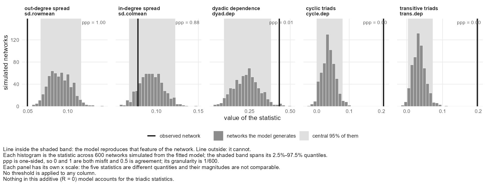
The two triad features are far outside their ranges, with ppp at zero: no simulated network had as much clustering as the real one. Ties are also returned more often than the model expects. The pattern says what is wrong. Clustering the model cannot reach means there are groups it does not know about.
Choosing R with the fit check
Latent factors are how the model can learn about groups nobody recorded. Fit the same model at increasing R and watch the clustering feature. Each row is one fit:
# The clustering feature, at each R: what was observed, and the range the
# fitted model simulates.
check <- function(R) {
f <- fit_selection(confides ~ prior_tie(lag = 1), data = offices, R = R,
nscan = 6000, burn = 1000, odens = 10, seed = 1)
g <- netis_gof(f)
g <- g[g$statistic == "trans.dep", ]
round(c(observed = g$observed, simulated_low = g$predicted_lower,
simulated_high = g$predicted_upper, ppp = g$ppp), 3)
}
rbind("R = 0" = check(0), "R = 1" = check(1), "R = 2" = check(2), "R = 3" = check(3))observed simulated_low simulated_high ppp R = 0 0.197 0.003 0.072 0.000 R = 1 0.197 0.052 0.167 0.002 R = 2 0.197 0.046 0.156 0.002 R = 3 0.197 0.034 0.162 0.000
Read down the simulated range. With no latent factors the model produces almost no clustering. One latent dimension moves the range a long way toward the observed value, and further dimensions do not move it again. That is the rule for choosing R: raise it while the features that were outside keep moving, and stop when they stop. Each added dimension costs two numbers per person, so the smallest R that does the work is the one to use.
Notice also that the observed value is still above the range. The latent factors account for much of the clustering in this firm and not all of it. That is worth saying when you report the model, and the check is what lets you say it.
What the latent factors found
fit_r2 <- fit_selection(confides ~ prior_tie(lag = 1), data = offices, R = 2,
nscan = 6000, burn = 1000, odens = 10, seed = 1)plot(fit_r2, what = "latent")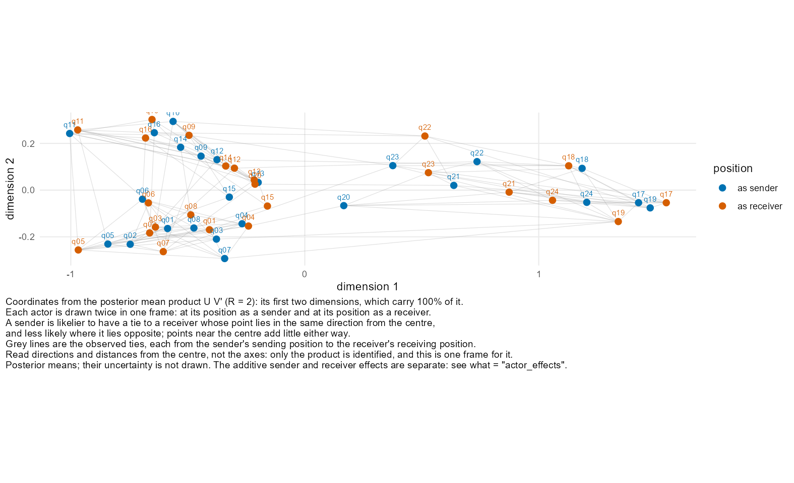
R = 2. Blue points are positions as a sender, orange points positions as a receiver, and grey lines are observed ties.The people fall into three clusters, and they are the three offices: q01 to q08, q09 to q16, and q17 to q24. Within a cluster the blue and orange points lie in the same direction from the centre, which is what makes ties inside it likely, and most grey lines stay inside a cluster. The model was never told about offices. Compare this with the single cloud on page B7, where there was nothing to find.
Measuring it is better than inferring it
A picture like that is a prompt to find out what the clusters are. If the office can be recorded, it belongs in the model as a characteristic of the pair:
# Suppose the office had been recorded: add it to the tie table as a
# characteristic of the pair.
office_ties$same_office <- as.numeric(rep(same, 2))
offices_known <- netis_data(office_nodes, office_ties, wave_col = "wave",
tie_meta = list(confides = list(zero_meaning = "measured_zero"),
same_office = list(zero_meaning = "measured_zero")))
fit_known <- fit_selection(
confides ~ dyad(same_office, lag = 1) + prior_tie(lag = 1),
data = offices_known,
nscan = 6000, burn = 1000, odens = 10, seed = 1
)
netis_gof(fit_known)[, c("statistic", "observed", "predicted_lower", "predicted_upper", "ppp")]statistic observed predicted_lower predicted_upper ppp 1 sd.rowmean 0.049621 0.052046 0.10034 0.98833 2 sd.colmean 0.077965 0.054761 0.10495 0.44000 3 dyad.dep 0.432682 0.255374 0.60644 0.52000 4 cycle.dep 0.206186 0.106226 0.27484 0.32000 5 trans.dep 0.197207 0.107930 0.27861 0.40167
With the office in the model and no latent factors at all, both triad features are well inside their ranges. A measured predictor that explains the clustering does better than latent factors that approximate it, and its coefficient can be interpreted. Use latent factors to find structure and to adjust for what you cannot measure, and prefer the measurement when you can get it.
People's own tendencies
Every person has a sender effect and a receiver effect. plot_data() returns them as a table, here sorted to show who is confided in most beyond what the predictors explain:
actors <- plot_data(fit, what = "actor_effects")
head(actors[order(-actors$receiver), c("node", "sender", "receiver")])node sender receiver 22 p22 -0.046908 0.29625 39 p39 -0.131046 0.28526 3 p03 0.010673 0.25757 12 p12 -0.113671 0.17057 25 p25 -0.049999 0.16274 37 p37 -0.011487 0.16230
netis_variance_components(fit)[, c("term", "estimate")]term estimate 1 sender variance 0.04890304 2 sender-receiver covariance -0.00046577 3 receiver variance 0.05840169 4 within-dyad residual correlation -0.04459937 5 dyadic residual variance 1.00000000
The variances say how much people differ in each tendency. The covariance says whether people who confide widely are also confided in widely. The within-dyad correlation is the tendency for a tie to be returned, beyond what the predictors explain.
Several teams, in more depth
Page B8 showed three ways to handle several teams. They are three different models.
| Route | The call | What it assumes |
|---|---|---|
| Pooled | the default | The effect is the same in every team |
| Separate | pool_beta = FALSE | Nothing: each team has its own estimate |
| Hierarchical | pooling = selection_pooling(random = ...) | Teams' effects differ around a common average |
For a hierarchical fit, netis_hierarchy() reports what varies between teams. mu is the average across teams and tau is the standard deviation between them:
fit_hier <- fit_selection(
confides ~ dyad(affect_gap, lag = 1) + dyad(same_project, lag = 1) +
prior_tie(lag = 1),
data = teams,
pooling = selection_pooling(random = c("intercept", "dyd_affect_gap_lag1")),
nscan = 3000, burn = 500, odens = 10, chains = 2, seed = 1
)
h <- netis_hierarchy(fit_hier)
h$population[, c("coefficient", "parameter", "estimate", "lower", "upper")]coefficient parameter estimate lower upper 1 intercept mu -1.161174 -1.2924606 -1.02231 2 intercept tau 0.056502 0.0025904 0.17373 3 dyd_affect_gap_lag1 mu -0.635184 -0.7667789 -0.50480 4 dyd_affect_gap_lag1 tau 0.068298 0.0049655 0.21426
own <- h$groups[h$groups$coefficient == "dyd_affect_gap_lag1",
c("group", "beta_g", "lower", "upper", "shrinkage")]
head(own)group beta_g lower upper shrinkage 11 team01 -0.64155 -0.80151 -0.46341 0.63143 12 team02 -0.67064 -0.88733 -0.51788 0.56528 13 team03 -0.60899 -0.76091 -0.42367 0.61595 14 team04 -0.60551 -0.76240 -0.41821 0.60560 15 team05 -0.63106 -0.79644 -0.45366 0.71661 16 team06 -0.63375 -0.83638 -0.46716 0.69616
beta_g is each team's own effect. shrinkage is how far that team's estimate was pulled toward the average: near 1 means the team had little information of its own, and near 0 means it kept its own estimate. Here tau is small, so the teams are estimated to be much alike and are pulled strongly together.
The pooled and hierarchical routes cannot be asked for at once:
fit_selection(confides ~ prior_tie(lag = 1), data = teams, pool_beta = FALSE,
pooling = selection_pooling(random = "intercept"))Error: pool_beta and pooling were both supplied, and they select different models: pool_beta combines per-group fits afterwards, while pooling fits one hierarchical model over all groups. Remove pool_beta to fit the hierarchical model, or remove pooling to fit the groups separately.
The hierarchical model is experimental: it is this package's own construction and has not been validated for statistical performance. See ?hierarchical_selection.
Functions used in a Selection analysis
| Step | Function | What it is for |
|---|---|---|
| Data | netis_data() | Build the data object; directed = FALSE for undirected ties |
netis_nodes(), netis_ties() | Get the tables back out | |
diagnose_data(), diagnose_design() | Report problems in the data and the design before modelling | |
| Formula | sender(), receiver() | A characteristic of one end of the tie |
dyad() | A characteristic of the pair, or another tie | |
prior_tie(), prior_reciprocity() | The tie, or the reverse tie, at the earlier wave | |
| Fitting | fit_selection() | Fit the model |
family = "bin" or "nrm" | A yes/no tie, or an amount | |
binarize = with threshold(), nonzero(), above_mean() | Read a valued outcome as yes/no | |
symmetric = TRUE | An undirected tie | |
R = | The number of latent dimensions | |
waves = | Which surveys to use | |
nscan, burn, odens, seed | The chain | |
pool_beta = FALSE | Several teams, kept separate | |
pooling = selection_pooling() | Several teams, one hierarchical model | |
| Reading | summary(), print() | The fitted model, in full or in brief |
netis_estimates(), coef() | The coefficients, as data | |
selection_effect() | A coefficient as a change in probability | |
netis_variance_components() | How much people differ in sending and receiving | |
netis_hierarchy() | What varies between teams, on a hierarchical fit | |
netis_diagnostics() | What was noticed while fitting | |
| Checking | netis_gof() | The fit check: observed network against simulated ones |
pseudo_r2() | How much the predictors account for | |
plot_data(fit, what = "mcmc") | R-hat and effective sample size | |
| Plotting | plot(data) | The network |
plot(fit) | The coefficients | |
what = "gof", "trace", "posterior", "mcmc" | The fit check and the chain | |
what = "actor_effects", "heterogeneity" | People's tendencies and their variances | |
what = "latent", "multiplicative" | The latent coordinates and their product | |
what = "groups" | Each team's estimates | |
plot_data() | The table behind any plot |
Each function has a help page: ?fit_selection, ?selection_effect, ?netis_gof and so on.
Under construction, and feedback is wanted
This tutorial, and the package it documents, are under construction. We greatly appreciate any feedback we receive.
Why yours is worth sending
rnetis has been exercised by very few people so far, and first outside use is what finds the parts of an interface that were only ever obvious to the person who wrote them. Everything is useful here: a refusal that did not tell you what to do next, a page that assumed something it never said, a number you could not interpret, a function you went looking for and did not find, or simply the step where you got stuck.
Refusals are worth singling out. They are this package's main interface — it would rather decline than guess — so a refusal whose message failed to name the fix is a defect in its own right, not a usage error on your part.
How to send it
Please do not send real or participant data. The shipped demo datasets (demo_influence, demo_influence_groups, demo_selection) and simulate_influence() will reproduce almost anything. If something genuinely cannot be shown without your own data, say that and nothing else rather than attaching it. rnetis writes nothing outside tempdir(), and a bug report is not the place to make the exception.
If you are reporting something specific, the R version and the versions of amen, latentnet, sna and lme4 usually decide the answer, so sessionInfo() is worth pasting in. A few lines of code that show the problem on demo data are worth more than a description of it.
What is still moving
Two things on these pages are this package's own constructions rather than established methods, and both say so where they are documented: the hierarchical multi-group Selection model (page B8) and the latent-scale variance share. ?rnetis-package carries the full list. Results from them are worth reporting as provisional, and feedback on them is especially welcome.
Formula terms at a glance
This page lists every formula term with the question it answers. It is the page to come back to.
Influence terms
| Term | What it does | Key arguments |
|---|---|---|
ar() | the unit's own earlier outcome | lag |
exposure() | what the alters scored, along a network | via, normalize, direction, isolate_rule, x_lag |
lagged() | a covariate at an earlier wave | lag |
latent() | latent-space positions, as controls | d, homophily, terms, lag, control, seed |
centrality() | a structural position measure as a predictor | the measure, mode |
network_stat() | a whole-network statistic as a predictor | the statistic |
(1 | group) | a random intercept; switches the backend to lme4 | — |
a:b | a two-way interaction (Influence only) | — |
Selection terms
| Term | What it does |
|---|---|
sender(x) | does a high-x actor name more? |
receiver(x) | is a high-x actor named more? |
dyad(z) | does this property of the pair predict a tie? |
prior_tie() | was the tie already there at the earlier wave? |
prior_reciprocity() | did the other one name me first? |
group(z) | a group-level predictor — refused as written; it belongs in the hierarchical model |
R is not a formula term: it is an argument to fit_selection(), because it sets the rank of the multiplicative effects rather than adding a named predictor. See page B7.
Network transformations, usable inside a term
| Call | What it does |
|---|---|
binarize(net, rule) | a weighted network to a binary one |
symmetrize(net, rule = ) | collapse the two directions; rule is required |
multiplex(a, b, combine = ) | combine networks (union, intersection) |
inverse(net) | invert the weights |
Binarization rules: above_mean(), above_median(), threshold(), abs_threshold(), quantile_threshold(), nonzero(), positive(), presence(), and custom_binarize_rule() for anything else. Each is a named object rather than a string, so a typo is an error rather than a silent fallback.
Importing, exporting and deriving
This page covers getting your data into the shape rnetis wants, and getting it back out again.
Importers
| You have | Use |
|---|---|
| An edge list | netis_data_from_edgelist() |
| An adjacency matrix | netis_data_from_adjacency() |
| One matrix per wave | netis_data_from_adjacency_series() |
An igraph object | netis_data_from_igraph() |
A list of igraph objects | netis_data_from_igraph_list() |
A network / statnet object | netis_data_from_network() |
| Separate frames per group | netis_data_from_split() |
| Something else tabular | as_netis_data() |
Exporters
| You want | Use |
|---|---|
An igraph object | as_igraph() |
| One per wave or group | as_igraph_list(), as_network_list() |
A network object | as_network() |
| A plain matrix | netis_adjacency() |
| The tables back | netis_nodes(), netis_ties(), netis_tables() |
What a conversion records
Every import crosses a boundary where meaning can be lost: an igraph object does not carry a notion of what a zero means or who was on the roster. Two functions make that visible rather than letting it pass.
netis_boundary() reports, for each declaration, whether it was declared by you or inferred — and when inferred, by which rule. page A3 reads one in full.
netis_losses() reports what a conversion actually dropped: isolates an edge list could not represent, attributes with no home in the target format, dyads that existed in one direction only. It is worth calling after any import you did not do by hand.
Derived networks
binarize(), symmetrize(), multiplex() and inverse() build a new network from an existing one, and can be used inline inside an exposure() term so the derivation travels with the fit. None of them has a default rule where the choice is substantive — symmetrize() refuses without one.
bi(), bi_components() and bi_sweep() handle the Burt-style indirect-exposure constructions, including sweeping a threshold to check that a conclusion does not depend on it.
Derived variables
| Function | What it adds |
|---|---|
add_centering() | group-mean, grand-mean or context centring, with the unit named |
add_decomposition() | splits a variable into between- and within-group parts |
add_baseline_provenance() | records which rows a baseline value came from |
Each writes a new column and records what it did, rather than modifying the original in place. Centring in particular is a choice with consequences for what a coefficient means, and unit is required rather than defaulted.
The rest of the package
This page gives one line per function, saying why you would reach for it, which a function index does not tell you.
Reading a fit
| Function | Reach for it when |
|---|---|
netis_estimates() | you want the coefficient table as a data frame to compute on |
tidy(), glance() | you already use broom and want the same shapes |
netis_glance() | you want one row describing the whole fit |
netis_estimand() | you want to know precisely what was estimated |
netis_diagnostics() | the fit mentioned findings and you want them |
filter_diagnostics() | there are too many findings to read |
plot_data() | you want the table behind any plot, to draw it yourself |
Effect sizes and explained variation
| Function | Reach for it when |
|---|---|
influence_effect() | you need an Influence effect on the outcome's own scale |
selection_effect() | you need a Selection effect as a probability contrast |
pseudo_r2() | someone has asked for an R-squared |
netis_variance_components() | you want to know where the variance sits |
netis_gof() | you want to know whether the model generates networks like yours |
Assumptions, dependence and sensitivity
| Function | Reach for it when |
|---|---|
netis_assumptions() | you are writing the limitations section |
netis_dependence() | you want to know what structure is left in the residuals |
influence_se_comparison() | you suspect clustering is affecting the standard errors |
diagnose_data() | before fitting anything |
diagnose_design() | before paying for a long chain |
Aggregation, reliability and agreement
| Function | Answers |
|---|---|
icc1() | how much variance is between groups? |
icc2() | are the group means reliable enough to use? |
rwg(), rwg_j() | do members of a group agree with each other? |
netis_reliability() | all of the above, bundled |
Network features outside a model
| Function | What it computes |
|---|---|
compute_exposure() | exposure as a column, for inspection |
compute_centrality() | degree and other centralities |
compute_network_stat() | density, reciprocity and other whole-network statistics |
simulate_influence() | a synthetic dataset with a known effect |
Everything here has a help page with worked examples. ?rnetis-package groups the full set the same way, and is the authoritative list if this one falls behind.
What rnetis refuses, and why
A refusal is a design statement, not an error. This page collects them, and says what is out of scope and why.
The principle
rnetis refuses in one circumstance: when returning a number would require a choice that is yours to make, or would produce a quantity whose name misdescribes it. It does not refuse to protect you from small samples, odd data or bad ideas — those get a finding, and you decide.
The practical test is whether the alternative is a silently wrong number. A wrong number looks exactly like a right one, travels into a paper, and is never caught. An error is caught immediately, by definition.
The refusals you will meet
| Situation | Why | The fix it names |
|---|---|---|
symmetrize() without a rule | max, min, sum and mean are different operations on a weighted network | pass rule = |
| Row-normalised exposure with isolates | the denominator is undefined, and 0 is not a neutral value | isolate_rule = "na" or "zero" |
complete_dyadic with no presence rule | rows exist regardless of tie status, so which rows are ties is undeclared | presence_rule, presence_col, or row_presence |
| Several groups, no random-effects term | the fit would pool unrelated networks into one intercept | add (1 | group), or subset to one group |
| Three or more waves on a Selection fit | rnetis fits one transition and will not choose which | name it with waves = c(from, to) |
logLik() on a Selection fit | amen returns none, and rebuilding one from draws renames a different quantity | pseudo_r2() |
group(z) in a Selection formula | collinear with the group intercept inside any one fit | a moderator on a random intercept |
| Cluster-robust SEs on one network | the outer variance is estimated across clusters, and there is one | nothing — and not clustering on actors |
netis_gof() on a hierarchical fit | that sampler simulates no networks | fit the groups separately |
| Interactions in a Selection formula | the latent scale shifts with modelled heterogeneity | subgroup fits, or a moderator |
| Multi-step exposure on a network with unresolved missing dyads | an unknown tie two steps out is not an absent one | declare the missingness |
What is out of scope, and why
- Two waves at most. With three or more, rnetis requires you to name the wave or the transition rather than choosing on your behalf.
- One outcome occasion per unit per fit. Wave depth is unrestricted — lags and exposure history may reach further back — but repeated outcome rows per unit are not modelled.
- Gaussian continuous Influence outcomes. Binary and count outcomes in an Influence model are not supported.
Two families of method are absent because of that scope, not because of any doubt about them: dynamic-panel estimators, which would address the bias page B2 mentions, and distance-shell network autocorrelation models. Both are published, both are sound, and neither fits inside what this package currently promises.
Common errors
The errors are listed roughly in the order you will meet them.
rnetis's messages are written to be read, and most of them name the fix. If you have hit one not listed here, the message itself is usually the best documentation available — it was written for the situation you are in, which a general page cannot be.
“Edge presence for ‘x’ is undetermined”
You declared the network complete_dyadic — every pair has a row — but not which rows count as ties. Pass a presence_rule, a presence_col, or row_presence if every row is a tie. page A3 works through the difference, and the three readings give genuinely different densities.
“Row-normalization requested but n node(s) have no reference-set members”
Someone has no alters, so the denominator is zero. Decide what an isolate means in your design: isolate_rule = "na" (undefined, and usually right), or "zero" (they sit at zero on the outcome's scale, which is rarely what you want). page A4.
“This netis_data object has N groups, but the formula has no random-effects term”
Add (1 | group), or subset to one group's rows and rebuild. page A8.
“This data has N waves … and this version fits one transition”
Name the transition: waves = c(1, 2). The refusal exists because a result reported without naming its transition reads as though the whole panel were modelled. See page B2.
“symmetrize() requires rule =”
On a weighted network, collapsing the two directions is several different operations. Pick one: "max", "min", "sum", "mean", "any", "both".
“A Selection fit has no log-likelihood”
logLik(), AIC() and BIC() are not defined for these models. Use pseudo_r2() for explained variation and netis_gof() for whether the model reproduces the network. See page B5.
“Internal error: the fitted model has N coefficient(s) but rnetis assembled M name(s)”
A design column had no variation across the whole network, so amen::design_array() dropped the intercept. Usually a small or heavily masked group, or a sender/receiver covariate that is constant within it. diagnose_design() finds this before the chain runs.
The fit completed but reported WARNING findings
Not an error, and the result is usable. netis_diagnostics(fit) lists them with a level each. A NOTE is worth a look, a WARNING will affect a result, an ERROR would have stopped the fit.
Slow fits and MCMC settings
This page explains what the chain arguments trade against each other, and what to do when a fit is taking too long.
The four arguments
| Argument | What it controls | Raising it |
|---|---|---|
nscan | total iterations | more draws, more time, linearly |
burn | iterations discarded as warm-up | safer start, fewer retained draws |
odens | thinning — keep one draw in every odens | fewer, less correlated draws; does not make the chain shorter |
seed | reproducibility | — |
Retained draws are (nscan - burn) / odens. The defaults used in this tutorial — nscan = 5000, burn = 1000, odens = 10 — keep 400, which is enough for stable coefficient summaries and thin for a posterior predictive check: it sets ppp's granularity at 1/400.
What actually costs time
- Actors, quadratically. The sampler works over ordered pairs, so doubling the actors roughly quadruples the work per scan.
- The rank R. Each dimension adds 2n latent parameters and they mix more slowly than the coefficients do.
- Groups. Per-group fits are one chain each; the hierarchical sampler puts every group in one chain and is not cheaper.
If a fit is too slow
Shorten the chain to check the pipeline, not the result. Run at nscan = 200, burn = 50 to confirm the formula parses, the terms identify and the output looks right. Then run the real chain once. Never report coefficients from the short run.
Check the design first. diagnose_design() catches a collinear or constant term in a second rather than after twenty minutes.
Lower R before lowering nscan. A short chain on a complex model is worse than an adequate chain on a simpler one, and page B7 gives a criterion for whether the complexity is earning anything.
Resist raising odens to make a fit faster. Thinning discards draws that have already been computed; it reduces storage and autocorrelation, not runtime. If you need the chain to finish sooner, that is nscan.
Where to read more
This page lists what rnetis is built on and where the methods come from.
The packages rnetis builds on
| Package | What it does here |
|---|---|
amen | fits every Selection model — the AME sampler, and the five posterior-predictive network statistics |
latentnet | stage one of latent(): estimates the latent positions |
lme4 | fits every Influence model with a random-effects term |
stats | fits every single-group Influence model, by OLS |
clubSandwich | the cluster-robust standard errors in influence_se_comparison() |
sna, numDeriv | the network-autocorrelation (SAR) estimator |
igraph, network | import from and export to the two main network representations in R |
ggplot2 | every figure |
rnetis does not reimplement any of these. Where a result comes from another package, the fit says so — summary() prints the backend and its version, and netis_boundary() records what a conversion inferred.
The methods
Influence
- Friedkin, N. E. and Johnsen, E. C. (1990) Social influence and opinions. Journal of Mathematical Sociology 15, 193–206. — network exposure.
- Leenders, R. T. A. J. (2002) Modeling social influence through network autocorrelation. Social Networks 24, 21–47. — row normalisation, and what the choice of weights means.
- Shalizi, C. R. and Thomas, A. C. (2011) Homophily and contagion are generically confounded in observational social network studies. Sociological Methods & Research 40, 211–239.
- Xu, R. (2018, 2021) — the two-stage latent-space adjustment behind
latent(). Published as a procedure with code, not as a package.
Selection
- Hoff, P. D. (2021) Additive and multiplicative effects network models. Statistical Science 36(1), 34–50.
- Hoff, P., Fosdick, B. and Volfovsky, A. (2024) amen: Additive and Multiplicative Effects Models for Networks and Relational Data.
- Nickell, S. (1981) Biases in dynamic models with fixed effects. Econometrica 49(6), 1417–1426.
- Heckman, J. J. (1981) The incidental parameters problem and the problem of initial conditions. — with Nickell, the reason rnetis fits one transition.
- Tjur, T. (2009) Coefficients of determination in logistic regression models. The American Statistician 63(4), 366–372.
Checking and combining
- Gelman, A., Meng, X.-L. and Stern, H. (1996) Posterior predictive assessment of model fitness via realized discrepancies. Statistica Sinica 6(4), 733–760. — the logic of
netis_gof(). - Vehtari, A. et al. (2021) Rank-normalization, folding, and localization: an improved R-hat. Bayesian Analysis 16(2), 667–718.
- Cochran, W. G. (1954); Hedges, L. V. and Olkin, I. (1985) — inverse-variance pooling, behind
pool_beta.
And the package itself
?rnetis-package lists every function grouped by task, and — the part worth reading — a section naming what is this package's own: the constructions that are not published methods, each declared on its own help page. The hierarchical Selection model and the latent-scale variance share are both on that list.